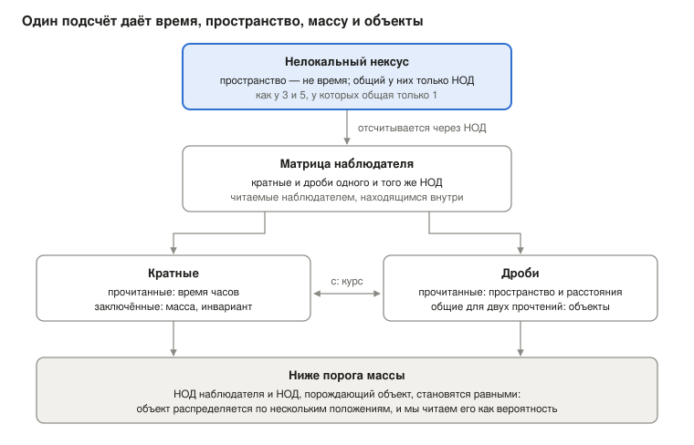

Кто следит за соблюдением законов физики? Никто, если материя — это само отношение
Ugo Lanciano (Уго Ланчано) · Независимый исследователь, Локри (Италия) · ORCID 0009-0008-7618-9635
Версия 2.68.1, 2026-10-26 · Хранится на Zenodo: 10.5281/zenodo.23672394 · Лицензия CC BY 4.0 · Создано с помощью ИИ-ассистентов, как указано в записи.
PDF версии для студентов — на английском языке: PDF, версия для студентов.
Маршрут чтения: Основания: почему законы выполняются · следующая: MM 2.40.2
Впервые здесь? Математическая материальность вкратце: вся теоретическая система за 8 минут чтения.
Версия для студентов записи MM 2.68.1 (DOI 10.5281/zenodo.23672394), написанная с помощью ИИ-ассистента на основе архивного текста; архивный текст остаётся на Zenodo.
Ugo Lanciano · ORCID 0009-0008-7618-9635 · Математическая материальность (MM) 2.68.1 · архивный текст от 26 октября 2026 года
О чём этот текст. Этот текст представляет Математическую материальность (MM) — теоретическую систему, которая читает физику, исходя из отношений. Он показывает основную идею, проверяет её на часах и рассказывает, как система читает пространство, объекты, массу, квантовую механику и время. В конце приведены четыре возражения философов и ответы автора.
Как читать. Текст предназначен для студентов-физиков и студентов-философов. Каждое техническое слово объясняется при первом появлении. Слова, характерные для MM, собраны также в глоссарии в конце. О том, как была выполнена работа (регистрации, проверки, файлы), рассказано в последнем разделе.
Вопрос: кто гарантирует законы физики?
Законы физики действуют везде и всегда. Электрон здесь и электрон в далёкой галактике следуют одним и тем же правилам. Однако никто не следит за их соблюдением: у природы нет полицейского. Что же тогда их гарантирует?
Математическая материальность (MM) отвечает так: материя не подчиняется отношению, материя и есть отношение. Этот текст излагает тезис. Затем он разбирает его на примере часов, с двумя заявленными посылками. Наконец, он показывает, как система читает пространство, объекты, массу, кванты и время.
Идея в трёх пунктах.
- У законов нет стража. Вещь, которая нарушила бы их, не была бы непослушной: она была бы другой вещью.
- За отношениями нет никакого мира. Мир, который мы видим, — это сеть отношений, прочитанная изнутри.
- Математика работает применительно к миру, потому что она — форма отношения мира, освобождённая в уме.
Два классических ответа. У этого вопроса есть два традиционных ответа. Оба оставляют разрыв между правилом и материей.
- Первый помещает закон в «небо форм», в мир идей, отделённый от вещей, как у Платона (Plato). Тогда неясно, как закон касается материи.
- Второй помещает закон в наш язык: согласно ему, законы — это описания, сделанные нами. Тогда неясно, как язык угадывает мир.
Есть и более недавняя идея: Вселенная — это компьютерная симуляция. Эта гипотеза ставит программиста на место неба форм. Вацца (Vazza) (2025) оценил, что никто не смог бы оплатить энергию, нужную машине, которая симулирует Вселенную.
Великий переворот. MM не строит мост через разрыв: она говорит, что разрыва нет. В этой системе такой ход называется Великим переворотом. Наука уже совершала его пять раз. Пять вещей казались субстанциями и оказались отношениями:
- теплород — жидкость, которая, как считалось, переносит тепло от одного тела к другому;
- флогистон — вещество, которое, как считалось, покидает тела при горении;
- жизненная сила, которая, как считалось, отличает живую материю от неживой;
- эфир — среда, в которой, как считалось, распространяется свет;
- парижский прототип килограмма — металлический цилиндр, который долгое время и был килограммом; сегодня килограмм определяется через отношение, связанное с постоянной Планка (Planck).
Каждый раз мир оставался прежним. MM применяет тот же ход к двум последним элементам: материи и закону.
Слова теоретической системы. В тексте постоянно встречаются восемь слов. Здесь достаточно их смысла; каждое из них разбирается там, где оно нужно, и в глоссарии в конце.
- Нексус: исходная связь между двумя различными членами. Образцовый пример — связь между числами 3 и 5.
- Нелокальный: не расположенный в пространстве и времени. Это «догеометрический» смысл, то есть такой, который предшествует геометрии. Это не означает действия на расстоянии (§1).
- НОД: наибольший общий делитель, то есть единственная часть, общая для двух членов. Для 3 и 5 он равен 1.
- Копии: повторения общей единицы, когда нексус подсчитывается. В 3 содержатся три копии 1, в 5 — пять.
- Матрица: совокупность кратных и дробей НОД, читаемая тем, кто находится внутри неё. Здесь «матрица» не означает таблицу чисел из линейной алгебры. Кратные выступают как время, дроби — как пространство.
- Дифракция: то, как матрица наблюдателя делится на дроби, давая объект.
- Запись наблюдателя: то, что собрал наблюдатель. В расчётах это выбранный ИИ перевод матрицы наблюдателя.
- Перевод ИИ: то, как фраза автора становится величиной, которую можно вычислить. Это выбор, и текст его отмечает. Исход, зависящий от перевода, касается этого перевода, а не посылки.
Поясняющие посылки (ИИ). В тексте есть также несколько «поясняющих посылок (ИИ)». Это мосты, предложенные искусственным интеллектом между фразой автора и её переводом в расчёт. Автор принял их в текст 26 октября. Это не тезисы автора, и они оставляют ему открытые вопросы (§10).
1. Отправная точка: два разных члена и единственное, что у них общего
Философские посылки MM умещаются в пять фраз. Они имеют логическую форму отношения между 3 и 5. Это постулаты MM, подобные тем, из которых исходил Эйнштейн (Einstein) в теории относительности: они не доказываются, их оценивают по следствиям.
Напоминание из арифметики. Два целых числа взаимно просты, если у них нет общих делителей, кроме 1. 3 и 5 взаимно просты. 6 и 9 — нет: у них общее 3. Наибольший общий делитель (НОД) — это самое большое число, которое делит оба числа. Наименьшее общее кратное (НОК) — это самое маленькое число, кратное обоим. Для 3 и 5 НОД равен 1, а НОК равен 15.
Пять посылок:
- В начале есть различие. Есть не вещь: есть различие. A отлично от B.
- Существование взаимно. Две сущности существуют друг для друга только через то, что у них есть общего. Если бы у них не было ничего общего, их нельзя было бы даже назвать различными.
- Две сущности, у которых нет ничего другого общего, взаимно просты. Двум исходным сущностям не приписывается ничего, кроме того, что они две различные сущности: бытие-двумя. Поэтому у них нет общих составных частей: они взаимно просты, как 3 и 5. Бо́льшая общая часть, как 3, общая для 6 и 9, была бы третьей сущностью и потребовала бы ещё одного основания.
- Общая единица подсчитывается. Общей остаётся только единица: НОД(3, 5) = 1. Чтобы принадлежать обоим, единица должна быть подсчитана в каждом: три раза в одном и пять в другом. То, в чём что-то повторяется, имеет части, положения, расстояния: оно стало локальным, то есть расположенным в пространстве и времени.
- Копии — это одна и та же единица. Три копии единицы — это одна и та же единица, подсчитанная три раза. Между двумя копиями одной и той же вещи нет расстояния. Поэтому локальный мир несёт в себе, под видом числа, ту связь без расстояния, из которой он исходил.
Первый нексус: пространство и время. Первый нексус — это нексус между пространством и временем. В его нелокальной фазе пространство и время — члены без меры. Есть только логическое различие: пространство не есть время. Общий у них только НОД. Когда они подсчитываются, они становятся теми пространством и временем, которые мы измеряем. Эта фаза — не далёкий уровень: она присутствует в каждом месте и в каждый момент.
Четыре черты нексуса. У отношения между 3 и 5 есть четыре черты, и это черты нексуса.
- Нет посредника. 3 и 5 связаны единицей 1, и нет никакого числа «посередине», которое переносило бы связь. Именно это означает «нелокальный»: отношение не расположено в каком-либо месте или моменте и не распространяется по какому-либо пути.
- Члены не предшествуют отношению. 1 — это не кирпич, ждущий применения. Она появляется как единственное, что есть общего у двоих.
- Подсчёт создаёт пространство и время. Наименьшее общее кратное, 15, содержит 3 пять раз и 5 три раза. В матрице, которая возникает из подсчёта, кратные выступают как время, а дроби — как пространство. Когда объединяются несколько подсчётов (§2), время — это их общий рост, а пространство — их разброс, то есть то, насколько отдельные подсчёты отличаются друг от друга.
- Подсчёт сохраняет нексус. НОД × НОК = 1 × 15 = 3 × 5. Как бы ни вёлся подсчёт в локальном мире, произведение остаётся произведением исходного отношения.
Поясняющая посылка (ИИ): почему числа. Числа — это не количества пространства и времени: в нелокальной фазе у пространства и времени нет меры. 3 и 5 — это арифметическая форма логической ситуации: два различных члена, у которых общая только единица. Подсчёт входит с посылкой 4. Общее, чтобы принадлежать обоим, должно появиться в каждом; а появляться несколько раз — это уже подсчёт. То, что два подсчёта различаются, следует из посылки 1: два равных члена были бы одним. Конкретный случай появляется в модели часов (§2). Там шаг в покое (1, 1) не различает двух направлений света. Асимметрия же между двумя взаимно простыми подсчётами, такими как (3, 5), — это то, что читается как движение.
Прочтение времени и пространства, данное ИИ. Над общей единицей можно выполнить две операции: умножать её и делить её. Умножение даёт упорядоченную последовательность растущих сумм: 1, 2, 3 и так далее. Деление даёт различные части суммы, которая остаётся той же. При чтении изнутри первое — это то, что мы называем временем, второе — то, что мы называем пространством. Время и пространство не предшествуют подсчёту: это физические названия накопления и разбиения одной и той же единицы.
Слова автора. Автор говорит так (10 октября): «esiste un gradino sottostante della realtà dove uno strato non locale di logica materiale ha in sé le caratteristiche per generare il gradino di spazio e oggetti sovrastante» («существует нижележащая ступень реальности, где нелокальный слой материальной логики имеет в себе черты, позволяющие породить вышележащую ступень пространства и объектов»). Распространённая ошибка, добавляет он, — исходить из объективного пространства как необходимого элемента. В томе MM 2.30 это догеометрическая программа: программа, в которой геометрия пространства — не отправная точка, а то, что должно получиться из системы. В следующих разделах сказано, какая её часть уже выполнена.
Что означает «нелокальный»
Нелокальность — основание этой теоретической системы. В философии физики у этого слова есть по меньшей мере четыре смысла. MM использует один, выводит второй как следствие и исключает два других.
Напоминание: теорема Белла (Bell). Теорема Белла (1964) касается двух частиц, приготовленных вместе и затем измеренных далеко друг от друга. Белл показал, что определённые корреляции между измерениями нельзя воспроизвести, если одновременно выполняются три допущения:
- каждая система несёт собственные свойства, которые измерения выявляют (разделимость);
- никакое влияние не распространяется быстрее света;
- тот, кто измеряет, выбирает, что измерять, независимо от состояния источника (независимость настроек измерения).
Эксперименты находят именно эти корреляции. Следовательно, по меньшей мере от одного из трёх допущений приходится отказаться.
Четыре смысла слова «нелокальный» и что с ними делает MM:
- Нелокализованность (догеометрия). Отношение не расположено в каком-либо месте или моменте. В MM: это смысл системы, подтверждённый автором 13 октября.
- Неразделимость (холизм). Вся система не сводится к объединению частей, разделённых в пространстве и имеющих каждая собственное состояние. В MM: это следствие посылки. Копии нексуса — это одна и та же единица, подсчитанная несколько раз, а не отдельные части.
- Нелокальность Белла. Корреляции, которые не воспроизводит ни одно описание с тремя допущениями Белла. В MM: измеренные корреляции — это данное. Из трёх допущений посылка отбрасывает в самом корне первое, разделимость. Петлевая модель с локальным посредничеством (§5), в которой связь идёт и возвращается по световым конусам, проходя через источник, отбрасывает третье допущение: независимость настроек измерения от состояния источника. Никакого влияния на расстоянии.
- Действие на расстоянии. Влияние или сигнал проходит из одного места в другое быстрее света. В MM: это исключено. Сигналов нет, и граница Цирельсона (Tsirelson) соблюдается (§5).
Слова автора. Помимо фразы от 10 октября, три посылки говорят, как нелокальное входит в локальный мир.
- 13 октября ИИ предложил читать «нелокальный» как «не расположенный в пространстве и времени». Автор ответил: «sì, vale anche per la lettura» («да, это верно и для прочтения»).
- 24 сентября: «MCD originale è il passaggio dallo stadio non locale al [locale] della realtà […] la matrice nasce come diffrazione di MCD nello spazio e nel tempo come elementi separati» («исходный НОД — это переход от нелокальной стадии реальности к [локальной] […] матрица возникает как дифракция НОД в пространстве и во времени как в отдельных элементах»).
- 11 октября: «è la base non locale della realtà che forza il cosiddetto presente ad una parte parziale della matrice di cui fa parte l'osservatore; il legame non locale "accende" solo parte della matrice totale» («именно нелокальная основа реальности ограничивает так называемое настоящее лишь частью матрицы, к которой принадлежит наблюдатель; нелокальная связь „включает“ только часть всей матрицы»).
Поясняющая посылка (ИИ): нигде и присутствует везде. То, что не находится ни в каком месте, не находится «в другом месте»: у него нет никакого «где». В локальном мире оно появляется как копия. По посылке 5 каждая копия — это та же единица, подсчитанная ещё раз. Поэтому нелокальная фаза присутствует в каждом месте и в каждый момент, не будучи распределённой в пространстве: каждое место и каждый момент — это её копия. Отсюда следует неразделимость. Две копии одной и той же единицы — это не две вещи с собственными состояниями: это два прочтения одного и того же нексуса.
Поясняющая посылка (ИИ): переход и настоящее. Во фразах автора исходный НОД выступает как шарнир. Там пространство и время, которые были только различны, находят общий элемент. Затем нексус начинает подсчитываться, и возникает матрица, то есть локальный мир. Нелокальная фаза не остаётся далёким началом. Согласно посылке от 11 октября, она выделяет в матрице «включённую» часть: настоящее того, кто наблюдает. И, согласно ответу от 13 октября, смысл слова «нелокальный» верен и для прочтения. Три вопроса остаются открытыми (§10): что заставляет подсчёт начаться, что отличает включённую часть от остальной, в каком смысле прочтение нелокально.
Что не утверждается. Нелокальная фаза не передаёт ни сигналов, ни влияний. Сегодня у неё нет отдельной экспериментальной сигнатуры: в этой системе она посылка. Её роль — дать основание двум фактам. Первый: законы одинаковы везде (§7). Второй: два крыла запутанной системы — это один нексус (§5). Система запутана («переплетена»), когда две её части, даже удалённые, не имеют раздельных состояний: измерения на одной коррелируют с измерениями на другой.
Соседи. На эту идею похожи другие.
- Для Дэвида Бома (David Bohm, 1980) то, что кажется раздельным, свёрнуто в неделимое целое, которое он называет «импликативным порядком».
- Для Марка Ван Рамсдонка (Mark Van Raamsdonk, 2010) связность пространства происходит от запутанности.
- Неразделимость как тезис, отличный от локальности, принадлежит Дону Говарду (Don Howard, 1985), который находит её у Эйнштейна. Она же есть у Пола Теллера (Paul Teller, 1986), в виде «реляционного холизма».
- Об отношении между нелокальностью Белла и теорией относительности основная работа — Тима Модлина (Tim Maudlin, 2011).

Рисунок 1. Кратные и дроби одного и того же НОД, читаемые тем, кто находится внутри матрицы, — это время и пространство. Когда они заключены или являются общими, это масса и объекты. Разделы 2-6 следуют этой схеме сверху вниз.
2. Часы из 3 и 5: от подсчёта ко времени Эйнштейна
Переворот — это не только идея: это процедура. На часах, с двумя заявленными посылками, его можно осуществить вплоть до числа. Результат: часы, которые считают копии, показывают собственное время Эйнштейна.
Напоминание из теории относительности. Собственное время — это время, которое показывают часы, которые несут с собой. Специальная теория относительности говорит, что движущиеся часы показывают меньше времени, чем покоящиеся. Если часы движутся со скоростью v, множитель равен √(1 − v²), где v измеряется в единицах скорости света. Используют пространственно-временную диаграмму, где время отложено по вертикальной оси, а пространство — по горизонтальной: лучи света — это наклонные прямые. Между двумя последовательными тиками часов можно нарисовать световой ромб, называемый также причинным ромбом. Он ограничен лучами света, выходящими из первого тика, одним вправо и одним влево, и лучами, приходящими во второй. Две стороны ромба, a и b, измеренные вдоль направлений света, — это световые стороны шага: его координаты светового конуса.
В процедуре четыре шага.
- Убрать субстанцию. Взять величину, которая выглядит как вещь, текущее время, и спросить, какое это отношение. В MM время часов происходит от копий, которые они считают.
- Записать отношение как пару. Элементарный шаг описывается парой двух его световых сторон, a и b. Здесь входит посылка, названная B в депонированной работе MM 2.40: две стороны — взаимно простые целые числа, и шаг нельзя разделить. Когда часы покоятся, две стороны равны, и шаг равен (1, 1); когда они движутся, стороны различны, например (3, 5). Копии возникают на общих кратных, и световой ромб содержит a × b = НОД × НОК ячеек.
- Объединить два направления. Вторая посылка, названная C: два противоположных направления не складываются, а умножаются. Часы показывают √(a × b), среднее геометрическое двух сторон. Лаборатория, которая складывает, измеряет (a + b)/2, среднее арифметическое.
- Сравнить с известным законом. С 3 и 5 часы показывают √15 ≈ 3,873. Лаборатория показывает (3 + 5)/2 = 4. Отношение двух времён равно 0,968. В лаборатории время шага равно (a + b)/2, а смещение равно (b − a)/2: скорость — это их отношение, (5 − 3)/(5 + 3) = 2/8, то есть четверть скорости света. Для этой скорости теория относительности даёт √(1 − 1/16) = 0,968: то же самое число.
Поясняющая посылка (ИИ): почему произведение, а не сумма. Четвёртая черта нексуса говорит, что подсчёт сохраняет произведение. Копии шага заполняют a × b = НОД × НОК ячеек. Поэтому длительность шага нужно измерять операцией, которая сохраняет произведение. Берут произведение ab и его квадратный корень √(ab), чтобы вернуться к масштабу одного подсчёта. Это как сторона квадрата, в котором столько же ячеек, сколько в прямоугольнике a × b. Например, в прямоугольнике 3 × 5 — 15 ячеек, а квадрат с 15 ячейками имеет сторону √15 ≈ 3,873. Сумма же a + b меняется, когда меняется асимметрия между двумя сторонами.
Какие смены наблюдателя сохраняют нексус. Перейти к наблюдателю, движущемуся равномерно относительно первого, значит удлинить одну световую сторону в k раз и укоротить другую во столько же раз: a становится ka, а b становится b/k. Поэтому произведение ab = (ka)(b/k) не меняется. Множитель k — это множитель из k-исчисления Германа Бонди (Hermann Bondi, 1964): способа строить специальную теорию относительности только с помощью световых сигналов, таких как радиолокационные импульсы, где k — это релятивистский доплеровский множитель. Здесь k входит как преобразование, сохраняющее произведение, а не как допущение, поставленное до него.
Множитель Эйнштейна входит с посылкой C. С этого места это тождество, то есть равенство, которое верно всегда. Среднее арифметическое больше среднего геометрического, кроме случая равных сторон. Их отношение всегда равно √(ab)/((a + b)/2) = √(1 − v²). Это тождество k-исчисления Бонди (1964). Из него Кевин Кнут и Ньюшоу Бахрейни (Kevin Knuth, Newshaw Bahreyni, 2014) выводят метрику Минковского (Minkowski) и преобразования Лоренца (Lorentz). Это геометрия пространства-времени в специальной теории относительности и правила перехода от одного наблюдателя к другому.
Заданные места или нет. Депонированная работа MM 2.40 добавляет тест, затрагивающий философию пространства. Третья посылка, названная A, говорит, что события не находятся на заранее заданных местах. В расчётах копии разбросаны случайно и равномерно. Это добавленное допущение: посылка его мотивирует, но не навязывает.
Поясняющая посылка (ИИ). Посылка A — это вторая черта нексуса (§1), применённая к событиям: члены не предшествуют отношению. Заранее заданные места были бы членами, существующими до отношений. То есть они были бы тем вместилищем, которое переворот убирает.
Тест сравнивает два способа читать время. Первый читает самую длинную цепочку копий: начиная с первой вершины ромба, он перескакивает с одной копии на другую, всегда двигаясь в будущее, внутри световых конусов, и считает наибольшее число скачков, с которым он достигает последней вершины. Второй считает копии, умножая две стороны, с помощью √(ab).
- При 200 000 случайно разбросанных копий часы, которые читают самую длинную цепочку, показывают √(1 − v²) с точностью до 1%.
- Если же копии находятся на регулярной сетке, с фиксированными местами и одинаковыми для всех моментами (синхронная сетка), та же цепочка даёт среднее арифметическое (a + b)/2, то есть абсолютное время Галилея (Galilei), которое не замедляется при движении. Если места фиксированы, а времена выбираются случайно, замедление превышает лоренцевское на 7-29%.
- На той же сетке часы, которые считают копии, умножая две стороны, напротив, восстанавливают Эйнштейна с точностью до 0,43%.
Следовательно, для часов, читающих цепочки событий, места, фиксированные до событий, действуют как привилегированная система отсчёта и нарушают теорию относительности. Часы, считающие копии, восстанавливают теорию относительности даже на сетке.
До расчётов в депонированной работе был записан зарегистрированный критерий: заранее фиксированное правило, говорящее, когда набор тестов, названный P1-P5, успешен. Работа заявляет, что критерий не был выполнен: один тест при v = 0,8 оказался вне допуска в 6%.
Больше двух сторон: правило пар (MM 2.40.2, 25 октября). Если у часов n подсчитанных сторон, посылку «противоположные направления умножаются» можно расширить двумя способами. При n = 2 эти два способа совпадают.
- Правило произведения: часы показывают среднее геометрическое всех сторон.
- Правило пар: стороны умножаются по две, для всех пар различных сторон, и произведения складываются: Q = Σ xᵢxⱼ. Часы показывают √Q. Например, с тремя сторонами x, y и z получается Q = xy + xz + yz.
Поясняющая посылка (ИИ): почему пары. Нексус — это отношение между двумя членами (посылка 1). При большем числе сторон каждая пара — это нексус, и правило пар складывает нексусы. Правило произведения n сторон было бы, напротив, отношением сразу между n членами, которого в посылках нет.
С правилом пар общий рост сторон — это время, а их разброс — пространство. n сторон дают одно время и n − 1 направлений пространства, равноценных по форме. Это видно из алгебры. Если m — среднее сторон, то Q = [n(n − 1)·m² − Σ(xᵢ − m)²]/2. Первый член, общий рост, имеет знак плюс: это время. Второй, разброс сторон вокруг среднего, имеет знак минус и n − 1 независимых направлений, потому что отклонения от среднего в сумме дают ноль: это пространство. Это форма метрики Минковского, t² − x² − y² − z². Три стороны дают пространство-время 2+1, то есть два направления пространства и одно времени. Четыре стороны дают 3+1, как наблюдаемое нами пространство-время. У правила произведения, начиная с трёх сторон, нет преобразований Лоренца.
Что говорят расчёты. Тесты проводились на структурах, построенных из четырёх независимых подсчётов.
- Правило пар даёт размерность пространства-времени 3,92 ± 0,11, близкую к 4. Значение измерено на шести интервалах, которые лежат почти полностью внутри изучаемой области, чтобы избежать краевых эффектов; на всех интервалах оно равно 3,61. Интервал здесь — это область между двумя событиями, как световой ромб шага.
- Для первого наблюдателя движущиеся часы воспроизводят замедление теории относительности с точностью до 2%: отношение измеренного значения к ожидаемому равно 0,981 и 0,998. Правило произведения расходится с ними на 12%.
- Два зарегистрированных предсказания не подтвердились: размерность, оценённая по самой длинной цепочке (3,45), и сравнение двух наблюдателей.
- Изотропия структур, то есть равноценность всех направлений, не проверялась.
- Всего: 20 тестов пройдено, 4 не пройдено, 4 не поддаются оценке.
Что уже было известно. Алгебра известна. Это «нулевые реперы», наборы световых направлений, используемые как ориентир, у Зимана (Zeeman, 1964), Деррика (Derrick, 1981), Колла и Моралеса (Coll и Morales, 1991). Кнут (2016) сообщает, что при координированных цепочках согласованная мера существует только для двух или четырёх цепочек. Правило не говорит, сколько сторон. Четвёрка — это входное данное, выбранное для соответствия наблюдаемому пространству-времени. В следующем разделе предлагается её прочтение.
3. Сколько измерений? Два из правила, третье из данных
MM допускает три измерения пространства, как и современная физика, которая принимает их как данность. Автор говорит это так (25 октября): «MM ammette le tre dimensioni, è parimenti efficace per ora» («MM допускает три измерения; пока она столь же эффективна»). Есть известные аргументы о том, почему у пространства три измерения. Они касаются устойчивости орбит и возможности существования наблюдателей (Ehrenfest 1917; Tegmark 1997). Например, Эренфест (Ehrenfest) заметил, что при числе измерений больше трёх орбиты планет не были бы устойчивыми. Это аргументы, а не выводы.
Два направления из правила. Посылка от 24 октября гласит: «MCD ha il descrittore spazio, il descritto tempo e se stesso» («у НОД есть описывающее — пространство, описываемое — время и он сам»). ИИ перевёл эти три аспекта как три независимых подсчёта. С правилом пар три подсчёта дают одно время и два направления пространства. Тест на структурах, построенных из трёх подсчётов, дал размерность пространства-времени 2,98 ± 0,05 (MM 2.40.2).
Поясняющая посылка (ИИ): описывающее и описываемое. ИИ читает эти два слова автора так. Описывающее — это точка зрения, которая читает; описываемое — это то, что читается. Пространство описывает, потому что именно в нём прочтение размещает вещи. Время описывается, потому что оно есть то, что, будучи прочитанным, накапливается. НОД — третий аспект, потому что его делает необходимым посылка 2: это то, через что двое существуют друг для друга, и он не сводится ни к одному из них. Посылка от 27 сентября имеет ту же трёхчастную структуру: «top tempo, gli altri due spazio e specchio di se stesso» («верхнее — время, два других — пространство и зеркало самого себя»).
Настоящее — это поверхность. Посылка от 25 октября: «il 3+1 che misuriamo lo misuriamo in una complicazione di matrice in MM, non nel presente fisico, dove 2+1 è l'immediato che esiste» («3+1, которое мы измеряем, мы измеряем в усложнении матрицы в MM, а не в физическом настоящем, где 2+1 — это существующее непосредственное»). 2+1 — это геометрия непосредственного, то есть того, что существует в настоящем. Третье направление пространства заключено в том, как прочтения сочетаются друг с другом.
Идея, что отправная точка — это поверхность, имеет известный прецедент: голографический принцип ('t Hooft 1993; Susskind 1995). Он говорит, что информацию, содержащуюся в области, можно записать на поверхности, которая её ограничивает, как в голограмме. MM не перенимает его расчёты.
Поясняющая посылка (ИИ): почему непосредственное останавливается на 2+1. Непосредственное — это нексус, прочитанный сразу, с тремя его аспектами и ничем другим. Ещё один уровень дал бы третье направление пространства, а не второе время. Основание лежит в правиле пар. Общий рост всех подсчётов всегда остаётся один, и это время. Каждый дополнительный независимый подсчёт увеличивает разброс и добавляет, по построению, направление пространства.
Третье направление из данных. Почему только один уровень над непосредственным? Автор отвечает: «Perché così è fatta la matrice desunta dai dati» («Потому что такова матрица, выведенная из данных») (25 октября). ИИ сравнил два способа перевести этот дополнительный уровень, в исследовательской работе от 25 октября, ещё не депонированной и ещё не проверенной второй системой:
- повторение непосредственного: стопка копий одной и той же поверхности, как одинаковые сложенные листы. Пространство остаётся плоским.
- вложение по кратным: каждый уровень внутри предыдущего, как коробки одна в другой. Пространство искривляется через несколько шагов, как гиперболическая геометрия.
Гиперболическая геометрия имеет отрицательную кривизну: при удалении от точки доступное пространство растёт быстрее, чем в плоском пространстве. Представление о ней даёт седло.
Тест служит не для того, чтобы подсчитать направления пространства: построение фиксирует их число равным трём, добавляя один уровень к непосредственному 2+1. Он служит для сравнения формы, то есть получающейся кривизны. Наблюдаемое пространство плоское. Это показывает параметр кривизны Ω_k, равный нулю для плоского пространства. Измерения дают Ω_k = 0,0007 ± 0,0019. Они получены со спутника Planck (результаты 2018 года), который измерил излучение, оставшееся от ранней Вселенной, вместе с барионными акустическими осцилляциями: следами древних звуковых волн в распределении галактик, используемыми как линейка. Данные выбирают стопку. Остаётся проверить один пункт: что этот уровень входит в правило пар как четвёртая сторона, равная трём другим. Только так третье направление пространства неотличимо от двух других, как того требует наблюдаемая изотропия.
Уже известный результат. То, что иерархия вложенных ячеек даёт гиперболическую геометрию, — известный результат.
- В физике Брайан Свингл (Brian Swingle, 2012) читает сети ренормализации запутанности (MERA) как дискретную версию пространства анти-де Ситтера, которое является гиперболическим. Сеть MERA описывает квантовое состояние слой за слоем, на всё бо́льших масштабах.
- В математике Марио Бонк и Одед Шрамм (Mario Bonk, Oded Schramm, 2000) показывают, что добавление к пространству его масштабов как ещё одного направления даёт гиперболическое пространство: «гиперболический конус».
Поэтому вывод «данные выбирают стопку» опирается не только на недепонированную работу.
Закон и история. Здесь MM проводит границу, которая интересует философа. В этой системе, с правилом пар:
- то, что следует из тождества отношений, — это закон: множитель Эйнштейна, время как общий рост, пространство как разброс;
- то, что читается из измерения, — это история: число уровней, значение отдельных масс, интенсивность сильного взаимодействия.
О массах автор говорит образно: «è come se da una casa completa e finita si dovesse derivare la storia di un singolo mattone» («это как если бы из полного и законченного дома нужно было вывести историю одного кирпича»). Его спросили, как часто в модели история электрона меняет направление. Он добавил: «la parola quanto spesso in sé non esiste, ma è legata alla storia del singolo mattone che stai prendendo in considerazione» («слова „как часто“ самого по себе не существует, оно связано с историей того отдельного кирпича, который ты рассматриваешь»). MM не обещает вывести всё. Она обещает, что прочитанное умещается в одной системе, без противоречий.
4. Объекты и масса: что читает тот, кто наблюдает
В системе MM дроби подсчёта дают объекты и расстояния; кратные дают время и массу. Две депонированные работы от 24 октября, исправленные 25-го, проверяют переводы этих двух тезисов: MM 2.62 и 2.62.1 об объектах, MM 2.64 и 2.64.1 о массе. Исправленные версии отмечают места, где выбор ИИ был представлен как результат.
Что такое объект
Тезис автора. Наблюдаемые объекты автономны в своих локальных отношениях. Однако они связаны с тем, кто наблюдает, через дифракцию матрицы наблюдателя на дроби. О двух наблюдателях посылка от 23 октября говорит, что их матрица, «pur non essendo globalmente uguale, è in larga percentuale uguale, tanto da legarsi alla stessa proiezione, ossia gli oggetti fisici in comune osservati» («хотя и не одинакова глобально, одинакова в большом проценте, настолько, что связывается с одной и той же проекцией, то есть с совместно наблюдаемыми физическими объектами»). Модель эту фразу не проверяла.
Поясняющая посылка (ИИ): что значит «дифракция». В MM «дифракция» — это термин системы. ИИ читает его по аналогии с оптикой. Дифракционная решётка — это пластина со множеством параллельных щелей. Она делит одну световую волну на «порядки»: отдельные пучки, каждый из которых — чётко определённая доля целого. Точно так же матрица наблюдателя, которая едина, делится на дроби, и прочитанная дробь — это объект. В онтологии автора матрицы двух наблюдателей в большой степени перекрываются. Это позволяет избежать солипсизма, идеи, что существует только ум того, кто наблюдает, не возвращая субстанцию за отношения. Следующий перевод передаёт перекрытие как общую часть двух записей наблюдателей. Однако он не выводит, почему две записи наблюдателей согласуются.
Соседи. Сначала нужно назвать ближайших.
- Квантовый дарвинизм Войцеха Зурека (Wojciech Zurek). Информация о системе многократно копируется в окружающую среду, например в свет, который система рассеивает. Многие наблюдатели могут прочитать её независимо и найти одно и то же значение. Зурек говорит об «относительно объективном существовании».
- Реляционная квантовая механика, в которой состояние системы всегда определяется относительно другой системы, и связи между перспективами разных наблюдателей (Adlam и Rovelli 2023).
Однако, в пределах нашего поиска, ни одно исследование не определяет сам объект как общую часть записей двух наблюдателей.
Перевод, поставленный на проверку. Это выбор ИИ. Матрица наблюдателя передаётся записью наблюдателя. Объект, который видят два наблюдателя, — это общая часть записей этих наблюдателей. Это то, что каждый читает из собственной записи наблюдателя, не заглядывая в запись другого наблюдателя, находя то же значение, что и другой. В теории информации эта величина называется общей частью Гача — Кёрнера (Gács–Körner). Модель — это модель квантового дарвинизма. Есть источник, который может иметь два значения. Есть много рассеянных «носителей», таких как рассеянные фотоны, которые копируют значение источника с некоторой ошибкой. И есть два наблюдателя, каждый из которых собирает группу носителей.
Исходы:
- Отпадает: прочтение «объект — это обладание одинаковой статистикой». Два наблюдателя, каждый из которых бросает свою монету, находят одну и ту же статистику, половина орлов и половина решек, но они не наблюдают один и тот же объект.
- Не соответствует критериям, но не исключено: прочтение «объект — это разделяемая материя», то есть идея, что, чтобы видеть один и тот же объект, два наблюдателя должны собирать одних и тех же носителей. Действительно, в модели два наблюдателя с 63 носителями у каждого и ни одним общим уже согласуются в значении источника с точностью до одной миллионной.
- Совместимо: общая часть. Если копии несовершенны, точная общая часть равна нулю, пока записи наблюдателей не сравнены. Поэтому допускается малая вероятность расхождения: заявленный допуск δ = 10⁻⁶, при копиях, ошибающихся один раз из десяти. Общая часть остаётся нулевой, пока у каждого наблюдателя не более 22 копий. При 23 копиях расхождение падает ниже δ, и весь объект появляется сразу. При δ = 10⁻³ и δ = 10⁻⁹ соответствующие числа — 11 и 37 копий.
- Объект с более чем двумя значениями появляется ступенями. Здесь источник может находиться в двенадцати ячейках; копии размыты и могут ошибаться на одну ячейку; допуск тот же. При 82 копиях два наблюдателя согласуются в том, какая половина ячеек содержит объект; при 88 — какая треть, при 91 — какая четверть; при 101 — в том, какая это ячейка, то есть во всём объекте. Это нижние оценки в пределах проверенного класса прочтений.
Предлагаемое прочтение. Объект — это не вещь, данная до прочтений, и не личный образ: это то, что есть общего у двух прочтений. Стул не удаляется из модели: он остаётся частью структуры с собственным состоянием. Тезис удаляет дополнительный общий объект, данный до записей наблюдателей. Депонированная работа не выводит объективность и не решает проблему измерения. Это вопрос о том, как в квантовой механике суперпозиция возможностей даёт один наблюдаемый исход.
Что такое масса
Тезис. Один и тот же подсчёт есть время, когда он читается, и есть масса, когда он непосредственно заключён в матрице точки наблюдения.
Физика уже связывает массу и время.
- Каждая масса несёт ритм: комптоновскую частоту mc²/h, где m — масса, c — скорость света, а h — постоянная Планка. Чем массивнее тело, тем быстрее его ритм.
- Все тела падают одинаково, из какого бы материала они ни были сделаны, с точностью до нескольких частей на 10¹⁵. Это принцип эквивалентности.
Поясняющая посылка (ИИ). Прочитанное кратное становится рядом различных событий: это тиканье часов, то есть время. Заключённое кратное остаётся одним и тем же в каждом прочтении. Если тот, кто наблюдает, копирует тело на каждом тике, он обнаруживает, что эта часть не меняется. Между прочтениями меняется время; остаётся тем же масса. Поэтому масса выступает как инвариант, величина, которая не меняется между прочтениями. Именно это прочтение проверяет приведённый ниже перевод M-i.
Исходы:
- Отпадает: прочтение «весит число кусков», то есть идея, что весит сумма масс кусков, взятых по одному, без энергии, которая удерживает их вместе. У титана и платины разные связи: при этом прочтении они падали бы с разницей 7,5 × 10⁻⁴. Спутник MICROSCOPE, который сравнивал падение пробных масс из титана и платины, не видит разницы при точности около 10⁻¹⁵.
- Совместимы: три прочтения, которые рассматривают «заключённое» как свойство тела. Они совпадают со стандартной физикой тождественно или по построению. Первое — масса как комптоновский ритм. Второе — масса Комара (Komar), способ общей теории относительности вычислять массу тела по его гравитационному полю. Третье — масса как потолок числа различных состояний: не более двух на комптоновский цикл (Margolus и Levitin 1998). Теорема Марголуса — Левитина говорит, что система с данной энергией не может проходить через полностью различные состояния быстрее определённого темпа.
- Перевод M-i (25 октября) — ближайший к словам автора. Тот, кто наблюдает, копирует одно и то же тело на каждом тике своих часов. Между копиями меняется прочитанное время. Остаётся тем же заключённое кратное, и его величина — это масса. Для разных движущихся наблюдателей общей остаётся инвариантная масса, та, которую все наблюдатели находят одинаковой.
Прочтение, которое получается. Масса — это не субстанция, запертая внутри тела: это то, что остаётся тождественным при прочтениях. Это та же идея, с которой Юджин Вигнер (Eugene Wigner, 1939) классифицировал частицы: масса как инвариант преобразований между наблюдателями. Нужно указать три ограничения. Ни один перевод сегодня не даёт чисел, отличных от известной физики. Совместимые прочтения не являются независимыми доказательствами. Ни одна отдельная масса не выведена.
В этой системе объекты и масса — две стороны одного и того же подсчёта. Дроби, прочитанные совместно двумя наблюдателями, дают объекты. Заключённые и инвариантные кратные дают массу.
5. Квантовая механика: где возникает вероятность
Та же система, которая читает пространство, время, объекты и массу, допускает квантовую механику. Она не меняет её предсказаний, но предлагает, где возникает вероятность. Работа этого периода заключена в трёх посылках (13 и 22 октября), в депонированных работах MM 2.48 (14 октября) и 2.66 (25 октября) и в версии 2.48.1 (26 октября).
Два напоминания. Правило Борна (Born) даёт вероятности квантовой механики: вероятность исхода — это квадрат модуля его амплитуды, |ψ|². Граница Цирельсона касается наиболее используемого теста теоремы Белла, который объединяет четыре корреляции в одно число. Если у каждой системы есть собственные и локальные свойства, это число не превышает 2. Квантовая механика достигает самое большее 2√2: это граница Цирельсона.
Нелокальность без сигналов. При запутанности две удалённые системы остаются коррелированными, хотя ничто не проходит напрямую от одной к другой. Для MM это след нелокальной фазы нексуса, где «нелокальный» значит не расположенный в пространстве и времени. Если на каждом из двух крыльев прочтения следуют геометрии квантовых состояний с правилом Борна («геометрия Борна»), ни одна корреляция не превышает границу Цирельсона, 2√2. Наиболее точное измерение даёт 2,82759 ± 0,00051 (Poh et al. 2015). Границу задаёт локальное прочтение, а не нелокальный слой, и нелокальность этой системы совместима с экспериментами.
Поясняющая посылка (ИИ): нелокальная фаза и петля. Два уровня выполняют две разные задачи.
- Нелокальная фаза, посылка автора, говорит, почему два крыла — это одна система: это две копии одного и того же нексуса.
- Петлевая модель, перевод ИИ в 2.48, показывает, что измеренные корреляции воспроизводятся без влияний вне световых конусов. Световой конус события содержит все точки, которых может достичь сигнал, идущий не быстрее света. В модели связь проходит через источник, и ничто не идёт напрямую от одного крыла к другому.
В терминах теоремы Белла посылка отбрасывает в самом корне первое допущение: разделимость, то есть что каждая система несёт собственные свойства. Модель, записанная в световых конусах, отбрасывает третье: независимость настроек измерения. В прочтении ИИ это не две лазейки, сложенные вместе, а один и тот же факт, увиденный с двух сторон. Со стороны нелокальной фазы это единство двух крыльев; в локальном прочтении это замыкание петли.
Модель не делает посылку излишней. Можно возразить, что для того, чтобы сделать два крыла одной системой, достаточно общего происхождения в источнике. Но в петле вес исхода происходит не только от источника. Он происходит от замыкания всей истории, вперёд и обратно: в 2.48 будущие, взвешенные замыканием петли, дают правило Борна. То, что эта замкнутая история одна, и есть то, что называет нелокальная фаза. Два пункта остаются открытыми (§10): добавляет ли это что-нибудь к общему происхождению и действительно ли две стороны — один и тот же факт.
Правило определяется копиями. Посылка от 13 октября: «la regola la decide il numero e la correlazione reciproca delle copie del nesso» («правило определяется числом и взаимной корреляцией копий нексуса»). ИИ прочитал её с опорой на работу Рафаэля Соркина (Rafael Sorkin, 1994).
Напоминание. В опыте с двумя щелями картина на экране — это не сумма картин, которые даёт каждая щель в отдельности. Есть дополнительный член, интерференция, который зависит от пар щелей: Соркин называет его интерференцией второго порядка. С тремя щелями квантовая механика не предсказывает нового члена «трёх путей»: всё сводится к парам.
В прочтении ИИ взаимная корреляция копий — это интерференция второго порядка: нет несводимой интерференции трёх путей, как того требует квантовая механика. Однако этот порядок сам по себе не фиксирует квадрат |ψ|². Следующий расчёт добавляет допущения, которых посылка не навязывает: только пары и матрица Грама, то есть таблица произведений между копиями, взятыми по две. На шахматной доске из 2.40 частица продвигается шагами вдоль направлений света, в модели, похожей на шахматную доску Фейнмана (Feynman). На каждом шаге «монета», то есть небольшая таблица весов, решает, сколько весит движение прямо и сколько весит поворот. Тёмные полосы, где пути взаимно гасятся, появляются только при неположительных весах поворотов, то есть отрицательных или комплексных. Монета с вещественными весами, положительными и отрицательными, даёт те же вероятности, что и монета с мнимым весом.
Будущее выбирает прошлое. Автора спросили: «что заставляет прочтение записаться в запись наблюдателя?». Он ответил (13 октября): «è il futuro di una storia che sceglie il suo passato; quindi la risposta alla tua domanda è il loop» («это будущее истории выбирает её прошлое; так что ответ на твой вопрос — петля»). Это прочтение известно: двухвременной формализм Ааронова, Бергмана и Лебовица (Aharonov, Bergmann и Lebowitz, 1964), транзакционная интерпретация Крамера (Cramer, 1986), обзор Уортона и Аргамана (Wharton и Argaman, 2020). Это ретропричинные прочтения: граница в будущем помогает зафиксировать исход.
Что говорят расчёты:
- Будущее, выбирающее исход, даёт частоты Борна только при определённых правилах взвешивания будущих: например, при взвешивании каждого будущего замыканием его петли, вперёд от приготовления к будущему и обратно. Это правило взвешивания, «мера на будущих», не выводится из модели: оно остаётся постулатом.
- Модель синглета с локальным посредничеством воспроизводит корреляции так, что каждая связь находится внутри световых конусов. Синглет — это состояние двух частиц с противоположными спинами, используемое в опытах Белла. В модели параметр, фиксированный будущим прочтением одного крыла, идёт назад к источнику и дальше к другому крылу. Угловой закон, то есть зависимость корреляции от угла между двумя измерениями, принимается как допущение. Отсутствие наблюдаемых сигналов выполняется только при весе Борна, как уже отметил Аргаман (2010).
- При весе, отличном от борновского, и с добавлением второй связи (принятой как допущение) бит мог бы вернуться в прошлое того, кто его отправляет: сигнал, посланный в собственное прошлое. Согласованные истории стали бы сколь угодно маловероятными. Шаг от «маловероятно» к «не может существовать» — это постулат автора.
Поясняющая посылка (ИИ). Вес, отличный от борновского, сделал бы согласованные истории сколь угодно маловероятными. Исключить их как невозможные значит постулировать, как это делает автор, что наблюдаемое настоящее требует согласованного замыкания петель. Это аргумент об условиях настоящего, и он остаётся постулатом.
Цена. Для философа цена такова: настройки измерения не независимы от состояния, потому что будущее входит в его приготовление. MM помещает себя среди ретропричинных прочтений с локальным посредничеством. Поправка: 2.48 исправляет более ранние версии, которые называли MM нелокальной в смысле теоремы Белла.
Где заканчивается квантовое поведение. Посылка от 22 октября: ниже определённого уровня массы НОД точки наблюдения и НОД дифракции, порождающей объект, становятся равными, как в зеркале. Тогда объект уже не находится в одной точке, и мы наблюдаем его как вероятность.
Поясняющая посылка (ИИ): сравнение двух ячеек. НОД, равный 1, — это НОД исходного нексуса. ИИ читает НОД локального подсчёта как его единицу: наименьшую ячейку, которую он различает, то есть его разрешение. Тот, кто наблюдает, читает своей ячейкой; объект порождается, в дифракции, своей. Пока ячейка наблюдателя мельче той, что порождает объект, прочтение фиксирует объект в одном месте. Когда две ячейки становятся равными, у прочтения нет более мелкой части, чтобы его зафиксировать, и объект распределяется по нескольким положениям. Это как измерять зёрнышко линейкой, деления которой размером с зёрнышко.
Попытка дать порогу число (MM 2.66). Депонированная работа 2.66 попыталась дать порогу число с помощью выбранных ИИ прочтений двух НОД. Для прочтения расстояния, то есть положения, предел оказывается не одной массой, а отношением. Это размер, который нужно различить, по сравнению с ячейкой копий, которые его различают, вместе с числом копий. Например, при декогеренции ячейка — это длина волны света, рассеянного объектом, а копии — рассеянные фотоны. Это совпадает с декогеренцией известной физики, теперь записанной как правило системы. Декогеренция — это процесс, при котором объект, обмениваясь информацией с окружающей средой (свет, молекулы воздуха), практически теряет признаки суперпозиции.
- Два прочтения ИИ не следуют из данных. Первое связывает порог с галактическим ускорением: но кластеры натрия массой более 170 000 атомных единиц массы всё ещё дают интерференционные картины (Pedalino et al. 2026). Второе помещает порог на уровне массы протона, около 1 атомной единицы массы: но целый атом цезия остаётся в суперпозиции 70 секунд (Panda et al. 2024).
- Другие пороги остаются возможными и сегодня не могут быть проверены: на планковской массе (22 микрограмма) или на m_P/√2; на массе наблюдателя (70 кг (kg)); типа Диоши (Diósi) и Пенроуза (Penrose), в которых суперпозиции больших масс прекращаются сами. Зарегистрировано предсказание со сроком до 31 декабря 2035 года.
Предлагается читать границу между квантовым и классическим там, где объект становится общей частью записей наблюдателей. Это то же понятие объекта, что и в разделе 4.
Правило Борна из подсчёта копий (26 октября). Образ автора: «se dovete descrivere un 10 per mezzo di un numero 1, sarete costretti a distribuire il descrittore 1 in 10 spazio tempi del numero 10» («если вам нужно описать 10 посредством числа 1, вам придётся распределить описывающее 1 по 10 пространствам-временам числа 10»). ИИ перевёл это так: амплитуда делится на множество копий одного размера («равного модуля»), и считается, сколько копий приходится на каждый исход. На шахматной доске из 2.40 этот перевод даёт в точности |ψ|² во всех 66 проверенных рациональных отношениях, то есть дробях со знаменателем до 12. Нужны три заявленных допущения:
- что вероятности существуют;
- что копии равного модуля учитываются одинаково: это математический перевод, сделанный ИИ, посылки о распределённом описывающем;
- что вероятности складываются по различным копиям и в сумме дают 1.
Поясняющая посылка (ИИ). Если 10 описывается распределением 1 по десяти местам, в каждом месте находится одна и та же 1 (посылка 5). Допущение 2 переводит это тождество в вероятность: отсутствие различий между копиями становится равной вероятностью копий равного модуля. Это заявленное допущение, а не вывод.
Для иррациональных отношений нужна ещё непрерывность. Построение аналогично построению Зурека (2005), с одним отличием: здесь равная вероятность заявлена как посылка, а не выведена. Именно этот шаг Шлоссхауэр и Файн (Schlosshauer и Fine, 2005) оспаривают в выводе Зурека. Почему именно квадрат, а не другая степень? Среди проверенных показателей монета из 2.40 оставляет неизменной, шаг за шагом, только сумму квадратов модулей амплитуд. Квадрат берётся оттуда, вместе с комплексными амплитудами и линейной суперпозицией. Следовательно, правило Борна не выводится без допущений, но у него есть точное место в системе.
Что можно сказать сегодня. Сегодня ни один эксперимент не отличает MM от стандартной квантовой механики. Если бы порог оказался массой, MM стала бы проверяемой модификацией теории, как модели коллапса, в которых суперпозиции обрываются сами. Её нынешний вклад — это место: вероятность возникает там, где матрица наблюдателя и дифракция объекта становятся равными.
6. Время: глубокое настоящее и растущее направление
В MM время не течёт внутри вместилища. У настоящего есть глубина, а прошлое — это то, что настоящее содержит. Направление времени, по автору, — это рост отношений в матрице наблюдателя.
Два времени. Посылка от 24 сентября: «il tempo fermo del presente può essere profondo fino a 13 miliardi di anni, poi c'è il tempo che percepiamo passare» («неподвижное время настоящего может иметь глубину до 13 миллиардов лет; затем есть время, которое, как мы воспринимаем, проходит»). Первое время — это глубина, то есть совокупность накопленных прочтений. Второе — это локальный ритм часов.
Начало как прочтение в настоящем. Посылка от 20 октября, в пересказе: истинное время — это время матрицы, где исходный нексус присутствует везде. То, что мы называем началом Вселенной, — это общая дифракция, которая объективно не существует в настоящем наблюдателя.
Состояния, а не эпохи. Автор поправляет тех, кто рассуждает эпохами. На вопрос о «первых минутах» Вселенной он ответил: «ma i primi minuti esistono per MM? tu pensi ancora per oggetti» («но существуют ли первые минуты для MM? ты всё ещё мыслишь объектами»). Вопросы следует задавать в терминах состояний материи и изменений организации, а не мест и эпох.
Депонированная работа MM 2.58 (21 октября) рассматривает таким образом первичный дейтерий, тяжёлый водород, который, согласно стандартной космологии, образовался в первые минуты. Измеренные сегодня содержания — это прочтения в настоящем. Они вычисляются с помощью стандартного нуклеосинтеза, теории образования первых ядер. Вычисленные таким образом, они служат входными данными для цепочки расчётов (MM 2.58), которая доходит до галактик и согласуется с данными так же хорошо, как стандартная модель. В этой системе содержания — это прочтения настоящего. Рассказ о «первых минутах» остаётся способом, которым известная физика описывает эти прочтения.
Направление времени. Посылка от 24 октября: направление — это «l'ampliamento del numero di relazioni legate a rete dentro la matrice dell'osservatore» («расширение числа отношений, связанных в сеть внутри матрицы наблюдателя»). Известная физика связывает стрелу времени с теплом, которое идёт от горячего к холодному. Однако есть эксперименты, в которых при начальных корреляциях между частями тепло идёт от холодного к горячему (Micadei et al. 2019).
Автор предостерёг от того, чтобы связывать две стрелы: «la direzione del calore potrebbe in certi casi essere contraria alla complicazione della matrice» («направление тепла в некоторых случаях могло бы быть противоположным усложнению матрицы»). В 2.64.1 ИИ перевёл матрицу как запись наблюдателя из ячеек памяти, которые начинаются пустыми и копируют наблюдаемую часть. Память считается в битах: бит — это информация ответа «да» или «нет». На каждом испытательном стенде есть моменты, когда запись наблюдателя и тепло идут в противоположных направлениях.
- Стенд Микадеи (Micadei) воспроизводит этот эксперимент: два спина, коррелированные вначале и находящиеся при разных температурах. Во всех 2198 моментах, когда тепло идёт назад, от холодного к горячему, запись наблюдателя несёт от 0,365 до 1,166 бита. Память растёт, пока тепло идёт назад.
- Там, где, напротив, памятью служит сама корреляция между двумя спинами, которую тепло расходует, чтобы идти от холодного к горячему, память падает всякий раз, когда тепло идёт назад.
Отсюда следует разделение: стрела записи наблюдателя и стрела тепла могут указывать в противоположные стороны. Прецеденты — «иерархия стрел» Дженнингса и Рудольфа (Jennings и Rudolph, 2010) и обращение тепла без обращения стрелы у Латюна и др. (Latune и др., 2019). Ни одно прочтение сегодня не даёт предсказаний, отличных от известной физики.
Вопрос. Как согласуются три фразы автора? Первая — запись наблюдателя как проекция прошлого: «c'è solo il passato» («есть только прошлое») (24 сентября). Вторая — направление от 24 октября. Третья — петля, в которой будущее выбирает прошлое. Этот вопрос снова рассматривается в разделе 10, и он закрыт в этой версии, 2.68.1.
Поясняющая посылка (ИИ): четыре уровня. Три фразы могут говорить о разных уровнях системы, над слоем, у которого нет времени:
- Нелокальный слой. Пространство и время там только различны, без меры: нет ни до, ни после.
- Отдельное прочтение. То, какое прочтение записывается, решается в замыкании петли между приготовлением и будущим исходом: «il futuro sceglie il passato» («будущее выбирает прошлое»). В локальной модели ИИ это происходит через связь, которая идёт и возвращается по световым конусам. Это касается того, как прочтение становится записанным, а не того, что уже записано.
- Сделанная запись наблюдателя. Записанное — это прошлое. У записи наблюдателя нет пространственных направлений, с которых приходят прочтения, у него есть только глубина: «c'è solo il passato» («есть только прошлое»).
- Рост записи наблюдателя. Число записанных отношений увеличивается: это направление времени, «l'ampliamento delle relazioni» («расширение отношений»).
В этом прочтении фразы не противоречат друг другу. Петля решает, что входит в запись наблюдателя; запись наблюдателя содержит только прошлое; её рост — это стрела. Автор принял это прочтение 26 октября. Расчёт, который его переводит, приведён ниже.
Единый расчёт (новое в версии 2.68.1). ИИ перевёл четырёхуровневое прочтение в одну модель. Критерии были зарегистрированы до расчётов. Модель объединяет четыре части:
- петля из 2.48 выбирает всю историю прочтений;
- запись наблюдателя из 2.64.1 принимает исходы в ячейки, которые начинаются пустыми;
- «c'è solo il passato» («есть только прошлое») становится точным условием, которое исключает сигналы из будущего в прошлое: статистика первых прочтений должна оставаться той же, останавливается ли история там или продолжается другими прочтениями;
- направление — это рост записи наблюдателя, считаемый в битах.
Есть два испытательных стенда: шахматная доска из 2.40, с тремя прочтениями, и два спина стенда Микадеи, с четырьмя прочтениями и теплом.
Основные исходы. Когда будущее выбирает с замыканием петли (правило из 2.48, дающее Борна), три фразы не противоречат друг другу.
- Первые прочтения имеют одну и ту же статистику, останавливается ли история там или продолжается. Действительно, уже записанные ячейки по построению не меняются.
- Запись наблюдателя растёт при каждом прочтении и даёт частоты Борна.
- На тепловом стенде запись наблюдателя растёт, пока тепло идёт в противоположную сторону, как в среднем, так и вдоль наиболее вероятной истории.
Два исхода слабее ожидаемых.
- На шахматной доске запись наблюдателя растёт меньше заранее фиксированного порога: 0,29 бита при втором прочтении и 0,17 при третьем, против 0,5. Причина в том, что приготовление делает прочтения после первого почти предсказуемыми.
- «Только прошлое» само по себе не выделяет правило Борна. Из четырёх проверенных правил только замыкание петли соблюдает его точно. Однако при заранее фиксированном пороге явно нарушает его только самое крайнее правило, в котором будущее выбирает детерминированно. И нарушает лишь в одном из двух переводов «веса будущего»: в том, который использован в 2.48 и даёт каждой истории одну компоненту будущего (соглашение «vettore»). В другом переводе, который суммирует компоненты окружения истории (соглашение «blocco»), ни одно из четырёх правил не превышает порог. Числа случайного будущего и детерминированного будущего зависят от этого перевода; числа замыкания петли — нет.
Что выбирает будущее. Автора спросили, выбирает ли будущее всю последовательность прочтений в одной замкнутой петле, как в расчёте, или каждое прочтение отдельно. Он ответил 26 октября, после расчёта: «come nel conto perché la piramide concettuale è determinata dalla direzione imposta al suo vertice» («как в расчёте, потому что концептуальная пирамида определяется направлением, заданным её вершине»). Перевод, принятый в расчёте, в котором будущее выбирает всю историю, совпадает с его ответом.
7. Почему никто не должен следить за соблюдением законов
Если посылка принята, переворот даёт основание трём фактам, которые классические ответы оставляют без основания: у законов нет стража, они действуют везде и они математические. Отсюда вытекают три следствия: Вселенной не нужна машина; скорости света не нужно внешнее обоснование; мир не исчезает.
Законам не нужен страж. 3 и 5 не «подчиняются» факту, что их НОД равен 1: они и есть этот факт. С общим делителем они были бы не непослушными 3 и 5: они были бы другими числами. Если материя — это отношение, вещь, нарушившая закон, не была бы наказана: её бы не было. Необходимость законов становится необходимостью тождества, как в арифметике.
Законы действуют везде и всегда. Для классического ответа универсальность законов — это грубый факт: факт, который просто есть, без основания. В перевороте каждое «здесь» и каждое «сейчас» — это копия одного и того же нексуса, и между двумя копиями одной и той же единицы нет расстояния. Два места не могут иметь разные законы по той же причине, по какой две копии 1 не являются двумя разными единицами. Универсальность законов — это нелокальность нексуса, увиденная изнутри локального мира. Аргумент касается законов. Значения, которые раздел 3 называет историей, такие как отдельные массы, берутся из измерения.
Законы математические. Юджин Вигнер (1960) говорил о «непостижимой эффективности» математики в естественных науках. В перевороте математика работает применительно к миру, потому что она — освобождённая форма отношения мира. Это прочтение ИИ третьего ответа автора (раздел 10). Локальный мир состоит из подсчётов, а подсчёт — это арифметика.
Никакой машины. Вселенная следует точным правилам, состоящим из подсчётов, везде и в каждый момент. Но никакая машина их не исполняет и никакой программист их не писал. Структуре отношений не нужно быть вычисленной, чтобы существовать. Что симуляцию не нужно запускать, заметил ещё Макс Тегмарк (Tegmark) (2008). Вацца (2025) оценил, что её исполнение на машине потребовало бы ресурсов, которых не допускают законы Вселенной. Вселенная ведёт себя как симуляция, не будучи ею.
Скорость света как обменный курс. В теории относительности скорость света — исходный принцип. В MM это фиксированный обменный курс между кратными и дробями одного и того же НОД, то есть сколько пространства стоит один шаг времени. Он работает как обменный курс между двумя валютами. Превысить его означало бы для какого-то наблюдателя пройти пространство, не отсчитывая времени, то есть выйти из локального мира.
Этот курс — необходимое относительное: внутри системы оно становится абсолютной гипотезой, одинаковой для всех и непреодолимой. Вне системы у него нет обоснования, потому что вне её нет другого члена, с которым его можно соотнести. Спрашивать о его основании извне — всё равно что спрашивать, что находится севернее Северного полюса.
Мир не исчезает. В пяти переворотах истории мир оставался прежним: исчезала субстанция, а не вещи. То же самое верно и здесь. Тезис не в том, что мира не существует. Тезис в том, что за отношениями нет никакого мира: мир, который мы видим, — это сеть отношений, прочитанная изнутри.
8. MM среди других идей: соседи и различия
MM — это форма онтического структурного реализма: тезиса, что на фундаментальном уровне есть структуры, то есть отношения, а не вещи с собственными свойствами. Она близка к умеренному варианту. Она говорит, какая именно структура есть, и осуществляет её с помощью арифметики. Почти у каждого её тезиса есть известный сосед. Список сначала называет их, а затем говорит, что MM разделяет и где от них расходится.
Самый старый сосед родился на том же ионическом побережье, с которого пишет автор. Пифагор (Pythagoras) жил и учил в Кротоне примерно с 530 года до н. э. С Кротоном связан и Филолай (Philolaus), первый пифагореец, опубликовавший книгу.
- Пифагореизм (Пифагор в Кротоне, около 530 года до н. э.; Филолай, фрагменты 1 и 4; Аристотель (Aristotle), «Метафизика» I 5). Что утверждает: порядок мира составлен из беспредельного и ограничивающего; всё, что познаётся, имеет число; согласно Аристотелю, пифагорейцы говорили, что вещи суть числа. Общее с MM: число как структура мира, а не только как мера. Где MM расходится: MM не говорит, что вещи суть числа, и этого не говорят фрагменты Филолая. Материя есть отношение, а число — это форма нексуса между двумя взаимно простыми членами.
- Онтический структурный реализм (Ladyman 1998; Ladyman и Ross 2007). Что утверждает: на фундаментальном уровне есть только структуры; в самой грубой форме: «нет вещей, структура — это всё, что есть». Общее: отношения предшествуют вещам. Где MM расходится: MM говорит, какая структура: два взаимно простых члена отношения с НОД как единственной общей частью. Члены отношения и сами отношения возникают вместе, как в умеренной форме у Эсфельда и Лама (Esfeld и Lam, 2008).
- Нелокализованность и неразделимость (Bohm 1980; Howard 1985; Teller 1986; Van Raamsdonk 2010). Что утверждает: то, что кажется раздельным, свёрнуто в неделимое целое; целое не сводится к частям; связность пространства происходит от запутанности. Общее: основание находится не в пространстве, и разнесённые части системы — это не отдельные части. Где MM расходится: в MM целое — это не квантовое состояние и не физический порядок, данный в начале. Это нексус между пространством и временем, в арифметической форме двух взаимно простых чисел, подсчитанный через НОД (§1).
- Математическая Вселенная (Tegmark 2008). Что утверждает: физическая реальность — это математическая структура; математическое существование и физическое существование совпадают, так что каждая структура — это вселенная («Уровень IV» Тегмарка). Общее: никакой машины: структуре не нужно быть запущенной, чтобы существовать. Где MM расходится: существует только наша структура. Другие — это мысленные различия, опирающиеся на неё, и взгляда извне нет (§10).
- Законы, устанавливающие необходимость (Armstrong 1983). Что утверждает: законы — это отношения необходимости между универсалиями, то есть между общими свойствами, и они контингентны: они могли бы быть другими. Общее: законы — не просто регулярности. Где MM расходится: в MM нет дополнительного отношения, действующего на материю: необходимость — это необходимость тождества.
- Законы, которые не управляют (Beebee 2000). Что утверждает: законы — это регулярности, которые наилучшим образом систематизируют факты; они ничем не управляют. Общее: нет стража законов. Где MM расходится: для MM законы необходимы, а не просто наилучшая сводка фактов.
- Примитивные законы (Maudlin 2007). Что утверждает: законы — это примитивный ингредиент мира, который ни к чему другому не сводится. Общее: законы не сводятся к фактам. Где MM расходится: MM не принимает их как примитивные: они следуют из того, чем является нексус.
- Диспозициональный эссенциализм (Bird 2007). Что утверждает: законы вытекают из внутренней природы (сущности) свойств и являются метафизически необходимыми. Диспозиция — это склонность действовать определённым образом, как хрупкость стекла. Общее: это ближайшая позиция: необходимость вытекает из природы самих членов отношения. Где MM расходится: вместо диспозиций MM ставит арифметические отношения, а вместо свойств — нексус.
- Эмерджентное пространство-время (Huggett и Wüthrich 2025). Что утверждает: в теориях квантовой гравитации пространство-время не фундаментально. Общее: пространство — не исходная сцена. Где MM расходится: в MM это программа. Из подсчёта получаются время и, с переводом ИИ, два направления пространства; третье берётся из данных.
- Пространство-время из подсчётов (Bondi 1964; Knuth и Bahreyni 2014). Что утверждает: собственное время — это среднее геометрическое двух подсчётов; геометрия Минковского и преобразования Лоренца следуют отсюда. Общее: тождество между средним геометрическим и средним арифметическим. Где MM расходится: в MM два подсчёта — это взаимно простые световые стороны, и у копий нет заданных мест (§2).
- It from bit (Wheeler 1990). Что утверждает: всякая физическая вещь имеет информационное происхождение, в ответах «да» или «нет». Общее: физический мир как исход различений. Где MM расходится: для MM on/off — это освобождённое различение ума; физическое записано как пространство и время (§10).
- Квантовый дарвинизм (Zurek 2009) и реляционные перспективы (Rovelli 1996; Adlam и Rovelli 2023). Что утверждают: объективность возникает из избыточных копий в окружающей среде или из связей между перспективами. Общее: объект как то, в чём согласуются несколько прочтений. Где MM расходится: MM предлагает читать объект как общую часть двух записей наблюдателей (§4).
- Ретропричинность (Aharonov, Bergmann и Lebowitz 1964; Cramer 1986; Wharton и Argaman 2020). Что утверждает: граница в будущем помогает зафиксировать исход. Общее: будущее выбирает прошлое. Где MM расходится: MM связывает вес Борна с согласованностью петель, как постулат автора (§5).
- Коллапс, зависящий от массы (Diósi 1987; Penrose 1996). Что утверждает: суперпозиции больших масс прекращаются сами. Общее: порог массы для квантового поведения. Где MM расходится: в MM порог находится там, где два НОД становятся равными; для расстояния он оказывается отношением, а не массой (§5).
Особенность MM — не какой-либо из этих тезисов, взятый отдельно. Это форма нексуса, два взаимно простых члена, и то, что одна-единственная форма читает вместе законы, пространство, время, массу, объекты и вероятность.
9. Что опирается на расчёт и что является посылкой
Этот документ содержит двадцать один тезис. Таблица говорит, на что опирается каждый из них. Есть семь категорий:
- Посылка: отправная точка системы, которая не доказывается (шесть тезисов).
- Известное тождество или теорема: уже доказанное равенство или теорема (два тезиса).
- Зарегистрированный расчёт: расчёт, выполненный после регистрации предсказаний и критериев (семь тезисов).
- Совместимо с известной физикой: перевод совпадает с сегодняшней физикой (три тезиса).
- Результат измерения: значение, которое читается из измерений (один тезис).
- Не депонировано: работа выполнена, но ещё не опубликована (один тезис).
- Открыто: работа не завершена (один тезис).
Второй столбец говорит, как фраза автора была переведена в расчёт. Перевод — это всегда выбор, почти всегда выбор ИИ, и исход касается этого перевода.
| Тезис автора | Как он был переведён для теста | Исход | Примечание | Где |
|---|---|---|---|---|
| Материя есть отношение; законы — это необходимость тождества | — | Посылка | Аксиома системы | §1, §7 |
| Нексус — это отношение между двумя взаимно простыми членами | — | Посылка | Оценивается по следствиям | §1; MM 2.30 |
| Существование взаимно; вне отношений ничего нет | Аргумент в четыре шага (прочтение ИИ) | Посылка | Нуждается в усилении против Льюиса (Lewis) и Тегмарка | §10 |
| Время происходит от копий; противоположные направления умножаются (посылки B и C) | Часы √(ab) против лаборатории (a + b)/2 | Известное тождество или теорема | k-исчисление Бонди; Кнут и Бахрейни | MM 2.40 |
| У событий нет заданных мест (посылка A) | Копии, разбросанные случайно, против сетки мест | Зарегистрированный расчёт | Самая длинная цепочка: Эйнштейн без мест, Галилей на синхронной сетке; критерий P1-P5 не выполнен | MM 2.40 |
| Противоположные направления умножаются, и при большем числе сторон | Правило пар против правила произведения | Зарегистрированный расчёт | Известная алгебра; 20 тестов пройдено, 4 не пройдено, 4 не поддаются оценке | MM 2.40.2 |
| У НОД есть описывающее — пространство, описываемое — время и он сам | Три аспекта как три подсчёта (ИИ) | Зарегистрированный расчёт | Пространство-время 2+1, размерность 2,98 | MM 2.40.2 |
| Один уровень над непосредственным, прочитанный из данных | Стопка против вложения (ИИ) | Не депонировано | Построение фиксирует третье направление; данные выбирают плоскую стопку | §3 |
| Объекты — это дифракция, в дробях, матрицы наблюдателя | Общая часть двух записей наблюдателей (ИИ: матрица передаётся записью наблюдателя) | Совместимо с известной физикой | В модели квантового дарвинизма | MM 2.62.1 |
| Масса — это кратное, заключённое в матрице точки наблюдения | M-i; комптоновский ритм, масса Комара, Марголус и Левитин (Margolus и Levitin) | Совместимо с известной физикой | Совпадает тождественно или по построению | MM 2.64.1 |
| Отдельные массы и число уровней — это история, а не закон | — | Результат измерения | Дом и кирпич | §3 |
| Нелокальность без сигналов | Локальное прочтение с геометрией Борна | Известное тождество или теорема | Теорема Цирельсона | MM 2.48 |
| Правило определяется числом и взаимной корреляцией копий | Интерференция второго порядка, с Соркином (ИИ) | Зарегистрированный расчёт | Тёмные полосы только при неположительных весах; Борн не выведен | MM 2.48 |
| Будущее истории выбирает её прошлое | Взвешенные будущие; синглет с локальным посредничеством | Зарегистрированный расчёт | Борн только при определённых мерах на будущих; вес Борна постулатом | MM 2.48 |
| Ниже порога массы два НОД становятся равными | Прочтения двух НОД (ИИ) | Зарегистрированный расчёт | Сегодня не фиксирован порог одной лишь массы; для расстояния отношение; предсказание до 2035 года | MM 2.66 |
| Описывающее 1 распределяется по 10 пространствам-временам | Копии равного модуля учитываются одинаково (ИИ) | Зарегистрированный расчёт | |ψ|² с тремя допущениями, знаменатели до 12 | MM 2.48.1 |
| Направление — это расширение отношений в матрице наблюдателя | Ячейки памяти, которые начинаются пустыми (ИИ) | Совместимо с известной физикой | На каждом стенде есть моменты с направлениями, противоположными теплу | MM 2.64.1 |
| Физическое — это пространство-время, математическое — on/off; нексус — это c, математика — понятие скорости | Прочтение ИИ трёх ответов | Посылка | Ответы от 26 октября | §10 |
| Скорость света — это обменный курс между кратными и дробями | — | Посылка | Необходимое относительное, абсолютное внутри системы | §7 |
| Пространство возникает из подсчёта | Догеометрическая программа | Открыто | Время и два направления с переводами ИИ; третье из данных | MM 2.30, §3 |
| Нексус в своей нелокальной фазе не находится ни в пространстве, ни во времени; исходный НОД — это переход к локальному, и нелокальная связь «включает» настоящее | — | Посылка | Посылки от 24 сентября и 11 октября; смысл подтверждён 13 октября | §1 |
Поясняющие посылки (ИИ) в таблице не указаны. Это мосты ИИ между тезисом и его переводом, и иногда они напоминают более ранние формулировки автора (27 сентября, MM 2.30). Это не дополнительные проверенные тезисы.
10. Четыре возражения философов и ответы
Философ выдвинет по меньшей мере четыре возражения. На первые три автор ответил 26 октября. Его слова приведены в кавычках; развитие, которое следует за каждым из них, — это прочтение ИИ. На четвёртое отвечают посылки. В конце раздела приведены вопросы, которые остаются открытыми.
Возражение 1. Что отличает физическую структуру от любой математической структуры?
Это возражение, которое Бас ван Фраассен (Bas van Fraassen, 2006) выдвигает против структурного реализма. Если мир есть структура, различие между физическим и математическим как будто исчезает. Возражение относится и к Тегмарку.
Ответ автора: «il linguaggio usato: spazio tempo contro on off mentale» («используемый язык: пространство-время против мысленного on/off»).
Прочтение ИИ. Различие то же самое; меняется язык, на котором оно записано. Физика — это различие, записанное как пространство и время, то есть первый нексус. Математика ума — это то же различие, освобождённое в on и off.
Есть два прецедента.
- Для Канта (Kant) пространство и время — это априорные формы созерцания: способы, которыми субъект получает всякий опыт. На них опирается математика. Но это формы субъекта.
- Для Питера Стросона (Peter Strawson, 1959) партикулярии, то есть единичные вещи, отождествляются в рамках пространства и времени, а тела являются базовыми партикуляриями.
MM переносит пространство и время от познающего к вещи: это первый нексус реальности, а не форма ума.
Возражение 2. Почему существует только наша структура?
Тегмарк отвечает, что существуют все, каждая как вселенная. Цитировать Витгенштейна (Wittgenstein), «о чём невозможно говорить, о том следует молчать», недостаточно: нужен аргумент.
Ответ автора: «nel mentale il distinto on off si libera, ma ha bisogno di un relativo di partenza, ossia lo spazio tempo. È l'argomento uguale alla velocità della luce» («в мысленном различие on/off освобождается, но ему нужно исходное относительное, то есть пространство-время. Это тот же аргумент, что и для скорости света»).
Прочтение ИИ. Аргумент состоит из четырёх шагов:
- Существовать — значит существовать для другого (посылка 2): всякому существованию нужно относительное, то есть нечто, по отношению к чему оно существует.
- Мысленное различие может меняться свободно, но оно существует только по отношению к исходному относительному. Этим относительным является пространство-время.
- Как и скорость света, исходное относительное необходимо и абсолютно внутри системы и не имеет обоснования вне её.
- У структуры, не имеющей ни одного члена, общего с нашей, нет относительного. Нельзя сказать, что она существует, нельзя даже посчитать её второй: если у двух сущностей нет ничего общего, их нельзя даже назвать различными.
Аргумент показывает, что существование другой структуры нельзя утверждать ни с какой точки зрения, включающей нашу. Шаг от «нельзя утверждать» к «не существует» делает посылка 2, для которой существовать — значит существовать для другого. Другие математические структуры существуют, но как мысленные различия, опирающиеся на нашу. Фраза Витгенштейна тем самым становится выводом аргумента, а не цитатой.
Противоположная позиция — модальный реализм Дэвида Льюиса (David Lewis, 1986): возможные миры изолированы друг от друга в пространстве и времени, и всё же все они существуют. MM отвергает её с помощью той же посылки 2, которая отрицает абсолютное существование, ни с чем не соотнесённое.
Ближайший прецедент — Рудольф Карнап (Rudolf Carnap, 1950). Для Карнапа вопрос о существовании, заданный вне всякой языковой рамки и понятый буквально, не имеет смысла. Его можно читать только как практический вопрос о выборе рамки. MM делает тот же шаг, но рамка — это не выбранный язык: это исходное относительное реальности.
Второй прецедент — Л. Э. Я. Брауэр (L. E. J. Brouwer), основатель интуиционизма в математике. В «первом акте» интуиционизма математика — это бессловесная деятельность ума, которая возникает из восприятия движения времени. Лишённая всякого качества, «двоица» оставляет пустую форму, которую Брауэр принимает за основную интуицию (кембриджские лекции, 1981, с. 4-5). Это очень близко также к посылке 3 MM, «nient'altro che l'essere-due» («ничего, кроме бытия-двумя»). Однако для Брауэра время находится в уме; для MM оно находится в нексусе.
Возражение 3. Не является ли MM круговой?
MM описывает нексус с помощью 3 и 5, то есть с помощью математики ума. Но, согласно первому ответу, эта математика приходит после пространства-времени.
Ответ автора: «la logica materiale del nesso è la velocità della luce; la matematica della mente è il concetto di velocità in se stesso» («материальная логика нексуса — это скорость света; математика ума — это понятие скорости само по себе»).
Прочтение ИИ. Это отношение между фиксированным экземпляром, то есть реальным случаем, фиксированным в природе, и освобождённым понятием, то есть общей идеей, которую ум из него извлекает. Понятие скорости допускает любое значение, даже выше c. Материальное отношение допускает только одно, и это исходное относительное: в теории относительности всякая скорость измеряется как доля c. Описывать нексус с помощью 3 и 5 — это как говорить о c с помощью понятия скорости. Чтобы говорить о нём, мы используем понятие; но вещь — это фиксированное значение, и понятие зависит от экземпляра, а не наоборот.
Отсюда вытекают три следствия:
- Математика больше физики. Ум мыслит скорости выше c и структуры, которых не осуществляет ни одна вселенная, потому что понятие свободно. Тегмарк принимает все освобождённые значения за вселенные; MM принимает за реальное только исходное относительное.
- Платон перевёрнут. Для Платона форма «сама по себе» предшествует вещам. Здесь форма «сама по себе» находится в уме и приходит после материального экземпляра, на который опирается.
- У эффективности математики есть основание. Она работает применительно к миру, потому что она — освобождённая форма отношения мира.
Прецеденты:
- Эдвин Тейлор и Джон Уилер (Edwin Taylor, John Wheeler; Spacetime Physics, 2-е изд. 1992) представляют c как коэффициент перевода между единицами пространства и времени. Они используют притчу о землемерах, которые измеряют север и восток в разных единицах.
- С 1983 года метр определяется через путь света, и значение c точно по определению: относительное, которое становится абсолютным внутри системы.
- Аристотелевский реализм Джеймса Франклина (James Franklin, 2014) читает математику как науку о количествах и структурах, реально присутствующих в мире. MM расходится с ним, потому что в мире находится экземпляр, а понятие находится в уме.
- Эйнштейн (1921) писал, что положения математики, поскольку они относятся к реальности, не достоверны; а поскольку они достоверны, они не относятся к реальности.
Поясняющая посылка (ИИ): что такое ум. В MM тот, кто наблюдает, не стоит вне матрицы. Наблюдатель и объект — это одна и та же логическая сущность (MM 2.30), и тот, кто наблюдает, — это часть матрицы с записью наблюдателя. Ум можно читать как запись наблюдателя, когда он хранит различение прочтения без его места и момента: «есть различие» вместо «здесь, сейчас, это различие». On/off — это различение со снятым адресом.
Абстракция остаётся зависимой от пространства-времени, потому что абстрагирующая запись наблюдателя состоит из прочтений, привязанных к месту и моменту. От прочтения можно отнять адрес, но не само прочтение. Точно так же понятие скорости верно для любого значения, но оно существует только потому, что есть отношение между пространством и временем, а значит, c.
Возражение 4. Могут ли быть отношения без членов?
Это классическое возражение онтическому структурному реализму (Chakravartty 1998; Psillos 2001): не может быть отношений без чего-то, что находится в отношении.
В MM нет отношений без членов: в ней есть члены без собственных свойств. Она близка к умеренному структурному реализму Эсфельда и Лама (2008), для которого объекты и отношения стоят на равных. Два члена, у которых есть только их различие, «слабо различимы»: их связывает отношение, которое ни один из них не имеет к самому себе (Saunders 2003). Известный пример в физике — два электрона в синглетном состоянии: никакое собственное свойство их не различает, но отношение «иметь спин, противоположный другому» сохраняет их различными.
Первая посылка исходит из различия: A отлично от B. Третья говорит, что у двух членов нет ничего, кроме бытия-двумя. Локальные члены, то есть объекты физики, возникают, когда нексус подсчитывается: это общая часть прочтений (§4).
Вопросы, которые ещё открыты
- Прошлое, направление и петля (вопрос закрыт в версии 2.68.1). 24 сентября автора спросили, знает ли запись наблюдателя, с какой стороны приходят её прочтения. Он ответил: «un registro è la proiezione del passato verso il futuro, quindi non ci sono più direzioni: c'è solo il passato» («запись наблюдателя — это проекция прошлого в будущее, поэтому направлений больше нет: есть только прошлое»). Исключены направления пространства; единственная ориентация — это время. 24 октября его направление — это расширение отношений. Как «c'è solo il passato» («есть только прошлое») согласуется с петлёй от 13 октября, говорит четырёхуровневое прочтение из §6, принятое автором 26 октября. Единый расчёт переводит его в модель, в которой три фразы не противоречат друг другу. О том, что выбирает будущее, всю последовательность или каждое прочтение, автор ответил 26 октября (§6). Вопрос закрыт.
- Одно относительное для каждой структуры? Последователь Тегмарка ответил бы, что у каждой структуры есть собственное исходное относительное, внутреннее для неё. Почему относительное должно быть только одно, ещё предстоит аргументировать или же заявить как посылку.
- Возражение Ньюмана (Newman). Если известна только форма структуры, всякое достаточно большое множество несёт её копию (Newman 1928). Тогда сказать, что мир имеет определённую структуру, значило бы сказать очень мало. Первый ответ, язык пространства и времени, выглядит как способ сказать, какая копия физическая. Это ещё предстоит развить.
Вопросы, оставленные поясняющими посылками. Поясняющие посылки (ИИ) оставляют автору семь открытых вопросов:
- Что в нексусе между пространством и временем соответствует 3 и 5 из примера?
- Когда подсчётов больше двух, как они связаны между собой?
- Что отличает уровень матрицы от непосредственного?
- Что означает, что кратное заключено «непосредственно» в матрице точки наблюдения?
- Что в посылках представляет собой НОД дифракции, порождающей объект, и что отличает его от НОД того, кто наблюдает?
- Когда будущее выбирает прошлое, что именно оно выбирает?
- Что такое ум в MM?
Вопросы о нелокальности. Пять открытых вопросов:
- Если в нелокальной фазе нет ни меры, ни до, ни после, что заставляет исходный НОД начать подсчитываться?
- Что отличает «включённую» часть матрицы от выключенной?
- В каком смысле прочтение записи наблюдателя нелокально?
- Каково при запутанности отношение между нелокальной фазой и петлёй, в которой будущее выбирает прошлое?
- Если нелокальная фаза — реальный факт, каково главное физическое следствие, которое нынешняя физика видит, но которому не даёт основания?
11. Кто что сделал и где читать
Онтология и посылки принадлежат автору, Ugo Lanciano, который не является физиком. Переводы посылок в модели, программы и расчёты были выполнены с помощью искусственного интеллекта (Claude, компании Anthropic), в диалоге, которым руководил автор. Вторая система проверила расчёты. Ни одна работа не прошла проверку рецензентом-человеком.
Использованные здесь арифметические тождества не новы; ново прочтение, которое их связывает. Почти каждое утверждение документа отсылает к депонированной работе, где находятся программы и журналы регистрации. Исключение — работа об измерениях из §3, ещё не депонированная. Единый расчёт из §6 находится в этой депонированной работе.
| Что | Депонированная работа | DOI |
|---|---|---|
| Книга: «Il grande rovesciamento» («Великий переворот»), «Logica e bilancia» («Логика и весы») | NUMERI (2026) | 10.5281/zenodo.21802475 |
| Общая система и посылки | MM 2.30 | 10.5281/zenodo.22730712 |
| Главная страница со списком записей | MM 2.27 | 10.5281/zenodo.22667516 |
| Обзор системы | «Число 1 перед зеркалом» | 10.5281/zenodo.23535916 |
| Часы, которые считают копии | MM 2.40 | 10.5281/zenodo.23280168 |
| Правило пар и измерения | MM 2.40.2 | 10.5281/zenodo.23631239 |
| Борн, Цирельсон и петля; правило Борна из подсчёта копий | MM 2.48 и 2.48.1 | 10.5281/zenodo.23352814; 10.5281/zenodo.23655646 |
| Дейтерий как прочтение в настоящем | MM 2.58 | 10.5281/zenodo.23521754 |
| Объекты как общая часть | MM 2.62.1 | 10.5281/zenodo.23643717 |
| Масса как заключённое кратное; направление времени | MM 2.64.1 | 10.5281/zenodo.23643718 |
| Порог массы квантового поведения | MM 2.66 | 10.5281/zenodo.23643759 |
Глоссарий слов MM
- Перевод ИИ: то, как фраза автора становится вычислимой величиной. Это выбор, и исход, зависящий от него, касается перевода, а не посылки.
- Общая часть: то, что два наблюдателя читают каждый из своей записи наблюдателя, не заглядывая к другому, с одним и тем же значением. В переводе ИИ это объект.
- Копии: повторения общей единицы, когда нексус подсчитывается. Две копии одной и той же единицы — это не две вещи: это одна и та же единица, подсчитанная дважды.
- Описывающее и описываемое: два из трёх аспектов НОД в посылке от 24 октября. В прочтении ИИ описывающее — это точка зрения, которая читает (пространство), описываемое — это то, что читается (время).
- Дифракция: то, как матрица наблюдателя делится на дроби, давая объект. Это термин системы, который ИИ читает по аналогии с решёткой в оптике.
- Поясняющая посылка (ИИ): мост, предложенный ИИ между фразой автора и её переводом в расчёт. Это не тезис автора.
- НОД и НОК: наибольший общий делитель и наименьшее общее кратное. В этой системе НОД — единственная общая часть двух членов. Для 3 и 5 НОД равен 1, а НОК равен 15.
- Великий переворот: ход MM, который убирает субстанцию за отношениями. Материя не подчиняется отношению: она и есть отношение.
- Непосредственное: то, что существует в физическом настоящем. Согласно посылке от 25 октября, оно имеет геометрию 2+1.
- Закон и история: закон — это то, что следует из тождества отношений; история — это то, что читается из измерения, например отдельные массы.
- Уровень: плоскость матрицы над непосредственным. Один дополнительный уровень даёт третье направление пространства.
- Локальный: расположенный в пространстве и времени, имеющий части, положения и расстояния.
- Петля: замыкание истории между приготовлением и будущим исходом, вперёд и обратно. Это способ, которым, по автору, «il futuro sceglie il passato» («будущее выбирает прошлое»).
- Матрица: совокупность кратных и дробей НОД, читаемая тем, кто находится внутри неё. Кратные выступают как время, дроби — как пространство.
- Необходимое относительное (или исходное относительное): то, с чем соизмеряется всё остальное. Вне системы у него нет обоснования; внутри оно становится абсолютным, как скорость света.
- Нексус: исходная связь между двумя различными членами, взаимно простыми, как 3 и 5. Первый нексус — это нексус между пространством и временем.
- Нелокальный: не расположенный в пространстве и времени. Это не означает действия на расстоянии.
- Нелокальная фаза: состояние нексуса, в котором пространство и время только различны, без меры и без «до» и «после». Она присутствует в каждом месте и в каждый момент.
- Исходный НОД: шарнир между нелокальной фазой и локальным миром. Там пространство и время находят общий элемент, и нексус начинает подсчитываться.
- Правило пар: для часов с большим числом сторон каждая пара сторон умножается, и пары складываются; часы показывают корень из суммы.
- Посылка: фраза автора, которая служит отправной точкой, как постулат. Она не доказывается: её оценивают по следствиям.
- Прочтение: в тексте имеет два смысла. Первый: то, что наблюдатель собирает изнутри матрицы; накопленные прочтения образуют запись наблюдателя. Второй: интерпретация, например «прочтение ИИ» фразы автора.
- Запись наблюдателя: то, что собрал наблюдатель. В расчётах это выбранный ИИ перевод матрицы наблюдателя; например, ячейки памяти, которые начинаются пустыми.
- Зарегистрированный расчёт: расчёт, предсказания и критерии которого были записаны и зарегистрированы до его выполнения.
- Включённая часть: часть матрицы, которую нелокальная связь «включает». Это настоящее того, кто наблюдает.
- Испытательный стенд: конкретная модель, на которой выполняется расчёт, например шахматная доска из 2.40 или два спина эксперимента Микадеи.
Как была выполнена работа
Версия. Это текст версии 2.68.1 (26 октября 2026 года). По сравнению с 2.68 (DOI 10.5281/zenodo.23669890) она добавляет единый расчёт из §6 с ответом автора о том, что выбирает будущее, и закрывает первый открытый вопрос из §10. Архивный английский текст находится в README.md. Приведённые здесь фразы автора, с датой и контекстом и с опечатками оригинала, находятся в AUTHOR_BACKGROUND.md.
Регистрация до расчётов. Предсказания регистрируются с отпечатком SHA-256 и временем UTC до расчёта, с исключениями, заявленными в депонированных работах. Отпечаток SHA-256 — это строка, вычисленная по содержимому файла: если файл изменится хотя бы на запятую, отпечаток изменится. Так можно проверить, что предсказание не было подправлено после расчёта.
Кто проверил расчёты. Вторая система, проверившая расчёты, — это gpt-6-luna, через Codex (Astra).
Как был написан текст.
- Текст был написан на итальянском языке ИИ (Claude) на основе листа автора от 11 октября, его посылок и депонированных работ, перечисленных в §11. Он родился в диалоге с автором, который попросил о нём 26 октября 2026 года.
- Внешние ссылки были проверены 26 октября тремя отдельными поисками, на открытых страницах (журнал, arXiv, Crossref или энциклопедия). Найденные исправления находятся в REFERENCE_CHECK.md.
- Затем второй экземпляр того же ИИ перечитал весь итальянский черновик, сверяя его с депонированными работами и точными словами автора, и сделал 32 замечания. Почти все были учтены. Неучтённые или учтённые частично перечислены с указанием причины в REFERENCE_CHECK.md.
- После внешней рецензии, вставленной автором, ИИ написал семь поясняющих посылок. Вторая система, Gemini, рассмотрела их и сделала 12 замечаний. 11 были учтены; неучтённое предлагало закрытый вопрос для автора. Автор принял поясняющие посылки в текст 26 октября.
- Позже в тот же день, по просьбе автора, ИИ и Gemini раздельно оценили, как текст рассматривает нелокальность. Отсюда появились часть §1 о том, что значит «нелокальный», и связи в §5, §8, §9 и §10. Gemini их рассмотрела: серьёзных замечаний нет, пять мелких, все учтены, одно более узкими словами и одно частично. Пять вопросов о нелокальности из §10 также происходят из этой рецензии от 26 октября.
- Ещё одна внешняя рецензия, вставленная автором, принесла две новые ссылки (Zurek 2005; Schlosshauer и Fine 2005). Она принесла также уточнение того, какие из допущений Белла отбрасывают посылка и петлевая модель.
- Рецензии Gemini, на поясняющие посылки, на пакет и на часть о нелокальности, находятся в папке REVIEW_GEMINI. Заключительная проверка всего английского текста, выполненная Gemini, не выявила серьёзных замечаний; её четыре мелких замечания были учтены.
Единый расчёт версии 2.68.1. Протокол и критерии были зарегистрированы до программ и расчётов. Две системы проверили его, каждая в два круга: Astra (gpt-6-luna через Codex) и Gemini. Их замечания и то, что было с ними сделано, находятся в CONTO_UNICO/04_verifica. В соглашении «vettore» расчёта правило детерминированного будущего называется F-A′. Ответ автора о том, что выбирает будущее, пришёл после расчёта и приведён с датой.
Недепонированная работа об измерениях. Сравнение стопки и вложения из §3 — это «путь V8» от 25 октября. Он ещё не депонирован и ещё не проверен второй системой.
Что это добавляет к листу от 11 октября. Документ исходит из листа для философа от 11 октября 2026 года и обновляет его работой до 26-го:
- что означает «нелокальный»: какой из четырёх смыслов использует система, как нелокальное входит в локальное и что не утверждается (§1, §5);
- правило пар: n подсчётов дают одно время и n − 1 направлений пространства (§2, §3);
- объекты как общая часть прочтений двух наблюдателей (§4);
- масса как заключённое кратное, инвариантное при прочтениях (§4);
- три посылки о квантовой механике: коррелированные копии, петля, порог массы (§5);
- правило Борна из подсчёта копий, с тремя заявленными допущениями (§5);
- направление времени как рост отношений в матрице того, кто наблюдает (§6);
- пифагореизм как самый старый сосед и соседи по нелокальности (§8), а также ответы автора на философские возражения (§10);
- в версии 2.68.1 единый расчёт, который переводит четырёхуровневое прочтение, и ответ автора о том, что выбирает будущее (§6, §10).
Архивный пакет.
- README.md: текст на английском языке.
- LEGGIMI_IT.md: архивный итальянский текст.
- AUTHOR_BACKGROUND.md: приведённые здесь фразы автора, с итальянскими оригиналами, датами и контекстом.
- REFERENCE_CHECK.md: как проверялись ссылки, найденные исправления и неучтённые замечания.
- figure_nexus_EN.svg, figura_nesso_IT.svg: рисунок 1 на английском и на итальянском языках.
- REVIEW_GEMINI: рецензии второй системы, Gemini, с исходом каждого замечания.
- CONTO_UNICO: единый расчёт из §6 (версия 2.68.1): протокол, программы, результаты, заметки об исходах и два круга проверок, с журналами регистрации (см. CONTO_UNICO/README.md).
- LICENSE.md: CC BY 4.0.
- IMPRONTE.sha256: отпечатки SHA-256 всех перечисленных выше файлов.
Единственные программы — это программы единого расчёта, в CONTO_UNICO; другие цитируемые расчёты находятся в депонированных работах, перечисленных в §11, с их программами и журналами регистрации.
Эта версия для студентов. Она написана с помощью ИИ-ассистента на основе архивного текста, который остаётся на Zenodo. Числа и утверждения — это числа и утверждения архивного текста. Добавлены напоминания из физики и философии для студента, примеры и глоссарий. Эта версия учитывает, полностью или частично, почти все поправки ради ясности, предложенные в рецензии Gemini (Argon). Этот русский текст — перевод английской версии для студентов, выполненный с помощью ИИ-ассистента. Автор прочитал и одобрил итальянскую версию.
Литература
Каждая ссылка была проверена 26 октября на открытой странице (журнал, arXiv, Crossref или энциклопедия), на которую ведёт имя. Цитаты из работ на других языках приведены на русском.
Философия
- Adlam, E., Rovelli, C. (2023), «Information is Physical: Cross-Perspective Links in Relational Quantum Mechanics», Philosophy of Physics 1(1): 4.
- Аристотель: Huffman, C. (2024), «Pythagoreanism», Stanford Encyclopedia of Philosophy, о Metaphysics I 5.
- Armstrong, D. M. (1983), What Is a Law of Nature?, Cambridge University Press.
- Beebee, H. (2000), «The Non-Governing Conception of Laws of Nature», Philosophy and Phenomenological Research 61(3): 571–594.
- Bird, A. (2007), Nature's Metaphysics: Laws and Properties, Oxford University Press.
- Bohm, D. (1980), Wholeness and the Implicate Order, Routledge.
- Brouwer, L. E. J. (1981), Brouwer's Cambridge Lectures on Intuitionism, ред. D. van Dalen, Cambridge University Press, с. 4–5.
- Carnap, R. (1950), «Empiricism, Semantics, and Ontology», Revue Internationale de Philosophie 4: 20–40.
- Chakravartty, A. (1998), «Semirealism», Studies in History and Philosophy of Science A 29(3): 391–408.
- Einstein, A. (1921), Geometrie und Erfahrung, Springer; английский перевод «Geometry and Experience», в Sidelights on Relativity, Methuen, 1922.
- Esfeld, M., Lam, V. (2008), «Moderate structural realism about space-time», Synthese 160(1): 27–46.
- Franklin, J. (2014), An Aristotelian Realist Philosophy of Mathematics: Mathematics as the Science of Quantity and Structure, Palgrave Macmillan.
- [Howard, D. (1985)](https://api.crossref.org/works/10.1016/0039-3681(85)90001-9), «Einstein on Locality and Separability», Studies in History and Philosophy of Science A 16(3): 171–201.
- Huggett, N., Wüthrich, C. (2025), Out of Nowhere: The Emergence of Spacetime in Theories of Quantum Gravity, Oxford University Press.
- Kant: Shabel, L. (2021), «Kant's Philosophy of Mathematics», Stanford Encyclopedia of Philosophy.
- Ladyman, J. (1998), «What Is Structural Realism?», Studies in History and Philosophy of Science A 29(3): 409–424; Ladyman, J., Ross, D. (2007), Every Thing Must Go: Metaphysics Naturalized, Oxford University Press.
- Lewis, D. (1986), On the Plurality of Worlds, Blackwell.
- Maudlin, T. (2007), The Metaphysics Within Physics, Oxford University Press.
- Maudlin, T. (2011), Quantum Non-Locality and Relativity: Metaphysical Intimations of Modern Physics, 3-е изд., Wiley-Blackwell.
- Newman, M. H. A. (1928), «Mr. Russell's "Causal Theory of Perception"», Mind 37(146): 137–148.
- Филолай: Huffman, C. A. (1993), Philolaus of Croton: Pythagorean and Presocratic, Cambridge University Press, фрагменты 1 и 4.
- Psillos, S. (2001), «Is Structural Realism Possible?», Philosophy of Science 68(S3): S13–S24.
- Пифагор: Huffman, C. (2024), «Pythagoras», Stanford Encyclopedia of Philosophy.
- Rovelli, C. (1996), «Relational Quantum Mechanics», International Journal of Theoretical Physics 35(8): 1637–1678.
- Saunders, S. (2003), «Physics and Leibniz's Principles», в K. Brading, E. Castellani (ред.), Symmetries in Physics: Philosophical Reflections, Cambridge University Press, с. 289–308.
- Strawson, P. F. (1959), Individuals: An Essay in Descriptive Metaphysics, Methuen.
- [Taylor, E. F., Wheeler, J. A. (1992)](https://phys.libretexts.org/Bookshelves/Relativity/Spacetime_Physics_(Taylor_and_Wheeler)/01%3A_Spacetime_Overview/1.01%3A_Parable_of_the_Surveyors), Spacetime Physics, 2-е изд., W. H. Freeman.
- Tegmark, M. (2008), «The Mathematical Universe», Foundations of Physics 38(2): 101–150.
- Teller, P. (1986), «Relational Holism and Quantum Mechanics», British Journal for the Philosophy of Science 37(1): 71–81.
- van Fraassen, B. C. (2006), «Structure: Its Shadow and Substance», British Journal for the Philosophy of Science 57(2): 275–307.
- Vazza, F. (2025), «Astrophysical constraints on the simulation hypothesis for this Universe: why it is (nearly) impossible that we live in a simulation», Frontiers in Physics 13: 1561873.
- Wheeler, J. A. (1990), «Information, Physics, Quantum: The Search for Links», в W. H. Zurek (ред.), Complexity, Entropy, and the Physics of Information, Addison-Wesley.
- Wigner, E. P. (1960), «The Unreasonable Effectiveness of Mathematics in the Natural Sciences», Communications on Pure and Applied Mathematics 13(1): 1–14.
- Wittgenstein, L. (1922), Tractatus Logico-Philosophicus, пер. C. K. Ogden, Kegan Paul, предл. 7.
Физика
- Aharonov, Y., Bergmann, P. G., Lebowitz, J. L. (1964), «Time symmetry in the quantum process of measurement», Physical Review 134(6B): B1410–B1416.
- Argaman, N. (2010), «Bell's theorem and the causal arrow of time», American Journal of Physics 78: 1007–1013.
- Bell, J. S. (1964), «On the Einstein Podolsky Rosen paradox», Physics Physique Fizika 1(3): 195–200.
- BIPM (1983), 17-я Генеральная конференция по мерам и весам, Резолюция 1, «Definition of the metre».
- Bondi, H. (1964), Relativity and Common Sense, Doubleday.
- Bonk, M., Schramm, O. (2000), «Embeddings of Gromov hyperbolic spaces», Geometric and Functional Analysis 10(2): 266–306.
- Coll, B., Morales, J. A. (1991), «Symmetric frames on Lorentzian spaces», Journal of Mathematical Physics 32(9): 2450–2455.
- Cramer, J. G. (1986), «The transactional interpretation of quantum mechanics», Reviews of Modern Physics 58(3): 647–687.
- Derrick, G. H. (1981), «On a completely symmetric choice of space-time coordinates», Journal of Mathematical Physics 22(12): 2896–2902.
- [Diósi, L. (1987)](https://api.crossref.org/works/10.1016/0375-9601(87)90681-5), «A universal master equation for the gravitational violation of quantum mechanics», Physics Letters A 120(8): 377–381.
- Ehrenfest, P. (1917), «In what way does it become manifest in the fundamental laws of physics that space has three dimensions?», Proceedings of the Amsterdam Academy 20 (1918): 200–209.
- Gács, P., Körner, J. (1973), «Common information is far less than mutual information», Problems of Control and Information Theory 2: 149–162.
- Jennings, D., Rudolph, T. (2010), «Entanglement and the thermodynamic arrow of time», Physical Review E 81: 061130.
- Knuth, K. H., Bahreyni, N. (2014), «A potential foundation for emergent space-time», Journal of Mathematical Physics 55: 112501.
- Knuth, K. H. (2016), «The Dimensions of Emergent Spacetime in the Influence Network», APS March Meeting, аннотация L44.00014.
- Latune, C. L., Sinayskiy, I., Petruccione, F. (2019), «Heat flow reversals without reversing the arrow of time», Physical Review Research 1: 033097.
- Margolus, N., Levitin, L. B. (1998), «The maximum speed of dynamical evolution», Physica D 120: 188–195.
- Micadei, K. et al. (2019), «Reversing the direction of heat flow using quantum correlations», Nature Communications 10: 2456.
- Panda, C. D. et al. (2024), «Coherence limits in lattice atom interferometry at the one-minute scale», Nature Physics 20: 1234–1239.
- Pedalino, S. et al. (2026), «Probing quantum mechanics with nanoparticle matter-wave interferometry», Nature 649: 866–870.
- Penrose, R. (1996), «On gravity's role in quantum state reduction», General Relativity and Gravitation 28(5): 581–600.
- Planck Collaboration (2020), «Planck 2018 results. VI. Cosmological parameters», Astronomy & Astrophysics 641: A6, ур. 47b.
- Poh, H. S. et al. (2015), «Approaching Tsirelson's bound in a photon pair experiment», Physical Review Letters 115: 180408.
- Schlosshauer, M., Fine, A. (2005), «On Zurek's derivation of the Born rule», Foundations of Physics 35(2): 197–213.
- Sorkin, R. D. (1994), «Quantum mechanics as quantum measure theory», Modern Physics Letters A 9(33): 3119–3127.
- Susskind, L. (1995), «The World as a Hologram», Journal of Mathematical Physics 36: 6377–6396.
- Swingle, B. (2012), «Entanglement Renormalization and Holography», Physical Review D 86: 065007.
- Tegmark, M. (1997), «On the dimensionality of spacetime», Classical and Quantum Gravity 14: L69–L75.
- 't Hooft, G. (1993), «Dimensional Reduction in Quantum Gravity», arXiv:gr-qc/9310026.
- Touboul, P. et al. (2022), «MICROSCOPE Mission: Final Results of the Test of the Equivalence Principle», Physical Review Letters 129: 121102.
- Van Raamsdonk, M. (2010), «Building up spacetime with quantum entanglement», General Relativity and Gravitation 42: 2323–2329.
- Wharton, K. B., Argaman, N. (2020), «Colloquium: Bell's theorem and locally mediated reformulations of quantum mechanics», Reviews of Modern Physics 92(2): 021002.
- Wigner, E. (1939), «On unitary representations of the inhomogeneous Lorentz group», Annals of Mathematics 40(1): 149–204.
- Zeeman, E. C. (1964), «Causality implies the Lorentz group», Journal of Mathematical Physics 5(4): 490–493.
- Zurek, W. H. (2005), «Probabilities from Entanglement, Born's Rule from Envariance», Physical Review A 71: 052105.
- Zurek, W. H. (2009), «Quantum Darwinism», Nature Physics 5: 181–188.